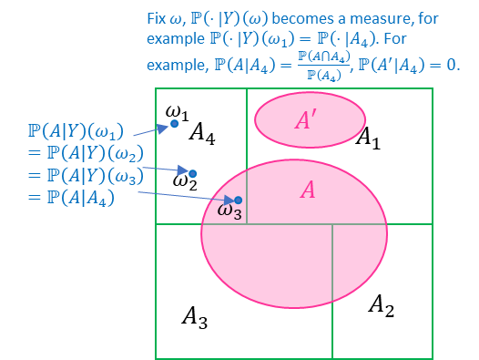

1. Preliminaries¶
1.1. Overview of Probability Measure Theory¶
Modern probability theory is built upon measure theory for rigorous insight into the nature of probabilities, where even an introductory course needs hundreds of pages’ discourse and deep background from at least real analysis (topology, limits, convergence, bounded variation, measurability, integration, differentiation, \(\mathcal{L}^p\) space, …). It is way beyond the scope of this text and most of the theories and proofs do not have close connection with real-world problems. Here we concisely overview basic constructions and results from modern probability measure theory which could potentially help with a better understanding of machine learning models that heavily involve probabilities, like Gaussian process or generative models. We treat it as rigorously as we can although it is an overview, and we provide the best intuition we can conceive.
1.1.1. Measure, Probability Space, Random Variable, Radon-Nikodym Derivative and Stochastic Process¶
In probability theory, a set \(\Omega\) containing all possible outcomes of an experiment is called a sample space. For example, in the experiment of coin flip, we can define \(\Omega = \left\{ 0,1 \right\}\) where \(0\) represents head and \(1\) represents tail. \(\Omega\) can be finite, countably infinite or uncountably infinite. Note this “experiment” is not a concrete “experiment” we do in machine learning to measure performance of a model; rather it is an abstract concept, and can be mathematically viewed as being defined by the sample space – if we know what the sample space is, then the “experiment” is completely determined. For example, if we let \(\Omega = \left\{ 0,1 \right\}\), then the experiment behind this \(\Omega\) is mathematically equivalent to the coin-flip experiment.
In addition, we define a set \(\mathcal{F}\) that contains subsets of \(\Omega\) and is named ùúé-algebra. It must satisfy three axioms: 1) \(\mathcal{F}\) is non-empty; 2) for any \(A\in\mathcal{F}\) then \(\Omega\backslash A\in\mathcal{F}\); 3) for countable many \(A_{\mathrm{1}},A_{2},\text{...},A_{n}\mathcal{,\ldots \in F}\), then \(\bigcup A_{k}\in\mathcal{F}\). The last axiom actually implies the union of any finite number of sets \(A_{1},\ldots,A_{N}\) is in \(\mathcal{F}\) because we can expand it to a countable sequence \(A_{1},\ldots,A_{N},A_{N + 1}\ldots\) where \(A_{N + 1} = A_{N + 2} = \ldots = \Omega\backslash\left\{ \bigcup_{k = 1}^{N}A_{k} \right\}\) and then \(\bigcup_{k = 1}^{N}A_{k} = \Omega\backslash\left\{ \bigcup_{k = N + 1}^{\infty}A_{k} \right\}\in\mathcal{F}\). It is also easy to check if \(\Omega\) is finite or countable, then ùúé-algebra is exactly the *power set of \(\Omega\) . ùúé-algebra is the generalization of the concept of power set of a finite set to an uncountable set. Not every set of in the power set of an uncountable set is mathematically measurable; as a result, length, area or volume, or generally a measure (see below) cannot be properly defined for such set (see Vitali set if interested). ùúé-algebra excludes these unmeasurable sets from the power set. Each set in \(\mathcal{F}\) is called a measurable set in general mathematical context, and is referred to as an event in a probabilistic context. The tuple \(\left( \Omega,\mathcal{F} \right)\) is called a measurable space.
Given a sample space \(\Omega\) and a set \(\mathcal{A}\) of subsets of \(\Omega\), then we say \(\mathcal{F}\) is a σ-algebra generated by event sets \(\mathcal{A}\) if \(\mathcal{F}\) is constructed as according to the axioms: 1) let \(\Omega\mathcal{,\varnothing \in F}\); 2) \(\forall A \in \mathcal{A}\), let \(\Omega\backslash A \in \mathcal{F}\); 3) for any countable many \(A_{1},A_{2}\mathcal{,\ldots \in A}\), let \(\bigcup_{k = 1}^{\infty}A_{k}\in\mathcal{F}\). We denote \(\mathcal{F =}σ\left( \mathcal{A} \right)\). We also say \(σ\left( \mathcal{A} \right)\) is the σ-closure of a set – the minimum σ-algebra that contain all sets in \(\mathcal{A}\). For a concrete example, suppose the sample space is \(\Omega = \left\{ 1,2,3,4,5,6 \right\}\) (e.g. the experiment of throwing a dice), and then
An important generated σ-algebra is the Borel σ-algebra. For \(\mathbb{R}^{n}\), we denote its Borel σ-algebra as \(\mathcal{B}\left( \mathbb{R}^{n} \right)\), defined as the σ-algebra generated by all open sets of \(\mathbb{R}^{n}\). It is the same for a general set \(S\), whose Borel σ-algebra as \(\mathcal{B}\left( S \right)\) is the σ-algebra generated by all open sets defined for \(S\). The concept of open sets for \(\mathbb{R}^{n}\) or \(S\) is taught in real analysis and general topology, and is beyond the scope of this text.
A measure is mathematical concept that rigorously models essential real-life concepts like length, area, volume, etc. The most widely used measure is called Lebesgue measure, which is consistent with our common sense. Under this measure, the length of a line, the area of a square, or the volume of a ball, etc. is calculated with our usual formulas. A measure \(Œº\) is formally defined over a ùúé-algebra \(\mathcal{F}\) as a \(\mathcal{F} \rightarrow \lbrack 0, + \infty)\) function s.t. 1) \(\mathbb{P}\left( \varnothing \right) = 0\); 2) \(A,B\in\mathcal{F,}A\bigcap B\mathbb{= \varnothing \Rightarrow P}\left( A \right)\mathbb{+ P}\left( B \right)=\mathbb{P}\left( A\bigcup B \right)\) . A measure has many intuitive properties we would expect from ‚Äúarea‚Äù or ‚Äúvolume‚Äù, for example, let \(A,B \in \mathcal{F}\), then \(Œº\left( A\bigcup B \right) \leq Œº\left( A \right) + Œº\left( B \right)\) and \(A \subseteq B \Rightarrow Œº\left( A \right) \leq Œº\left( B \right)\). If for any countable many measurable sets \(A_{i}\in \mathcal{ F,}i = 1,2,\ldots\) we have \(Œº\left( \bigcup_{i}^{}A_{i} \right) < + \infty\), we say \(Œº\) is a ùúé-finite measure. Probability is formally defined a measure over each event in \(\mathcal{F}\), called probability measure, usually denoted by \(\mathbb{P}\). A probability measure has all axioms of a measure, and adds a third axiom that \(\mathbb{P}\left( \Omega \right) = 1\) , called the probability normalization axiom . For example, if \(\Omega = \left\{ 0,1 \right\}\), then \(\left\{ \left\{ 0 \right\},\left\{ 1 \right\},\left\{ 0,1 \right\},\varnothing \right\}\) is a ùúé-algebra of \(\Omega\) and we can define \(\mathbb{P}\left( \left\{ 0 \right\} \right) = 0.3,\mathbb{P}\left( \left\{ 1 \right\} \right) = 0.7,\mathbb{P}\left( \left\{ 0,1 \right\} \right) = 1,\mathbb{P}\left( \varnothing \right) = 0\). We call \(\left( \Omega,\mathcal{F,}Œº \right)\) a measure space for a general measure \(Œº\), can call \(\left( \Omega,\mathcal{F}\mathbb{,P} \right)\) a probability space.
Given two measurable spaces \(\left( \Omega\mathcal{,F} \right)\) and \(\left( S,\mathcal{E} \right)\), a function \(f:\Omega \rightarrow S\) is called a measurable function if \(f^{- 1}\left( B \right)\in\mathcal{F,}\forall B \in \mathcal{E}\). We also say \(f\) is a \(\left( \Omega\mathcal{,F} \right) \rightarrow (S\mathcal{,E)}\) function. When we choose \(\left( S,\mathcal{E} \right) = \left( \mathbb{R,}\mathcal{B}\left( \mathbb{R} \right) \right)\), we also simply say a \(\left( \Omega\mathcal{,F} \right) \rightarrow \left( \mathbb{R,}\mathcal{B}\left( \mathbb{R} \right) \right)\) function \(f\) as a ℱ-measurable function. To make an intuition of what a measurable function should look like, think about an at most countable partition \(\mathcal{P =}\left\{ A_{1},A_{2},\ldots \right\}\) of \(\Omega\). Note for any set \(A\) in the generated σ-algebra \(σ\left( \mathcal{P} \right)\) and any \(A_{i}\), it is easy to verify either \(A\bigcap A_{i} = \varnothing\) or \(A_{i} \subseteq A\), and there is no other possibility. Then a \(σ\left( \mathcal{P} \right)\)-measurable real-valued function \(f\) must be a piecewise constant function s.t. \(f\left( x \right) \equiv c_{i},\forall x \in A_{i},i = 1,2,\ldots\) Suppose not, then there exists at least \(x_{i}^{\left( 1 \right)},x_{i}^{\left( 2 \right)} \in A_{i}\) for some \(i\) s.t. \(f\left( x_{i}^{\left( 1 \right)} \right) \neq f\left( x_{i}^{\left( 2 \right)} \right)\), then \(f^{- 1}\left( x_{i}^{\left( 1 \right)} \right)\) is a set in \(σ\left( \mathcal{P} \right)\) containing only part of \(A_{i}\), contradiction. Therefore, the concept of measurable function can be viewed as generalizing the piecewise constant function. Many counter-intuitive statements in probability theory involving σ-algebra can make more sense if we check the special case of a σ-algebra generated by a countable partition. The technical purpose in plain words for measurable function is to ensure any preimage a measurable set in \(\mathcal{E}\) can be found in \(\mathcal{F}\) in order to be “measured” by a measure defined on \(\left( \Omega\mathcal{,F} \right)\), we can see this more clearly later.
-
Fact 1-1. Basic arithmetic facts for measurable functions: 1) if \(f\) is \(\mathcal{F}\)-measurable and \(c\in\mathbb{R}\), then \(f + c,\ cf\) are \(\mathcal{F}\)-measurable; 2) if \(f\) and \(g\) are \(\mathcal{F}\)-measurable, then \(f + g\), \(\text{fg}\) are both \(\mathcal{F}\)-measurable; 3) if \(g \neq 0\), then \(\frac{f}{g}\) is \(\mathcal{F}\)-measurable; 4) if \(f\) is \(\mathcal{F}\)-measurable, \(g\) is \(\mathcal{B}\left( \mathbb{R} \right)\)-measurable, then the composition \(f \circ g\) is \(\mathcal{F}\)-measurable.
-
Lemma 1-1. If \(f\) is \(\mathcal{F}\)-measurable, then for any \(a\mathbb{\in R}\), \(\left\{ x \in \Omega:f\left( x \right) \geq a \right\}\), denoted as \(\left\{ f \geq a \right\}\), can be found in \(\mathcal{F}\) , simply because \(\left\{ f \geq a \right\}\) is a closed set, and thus \(\left\{ f \geq a\right\}\in\mathcal{B}\left(\mathbb{R}\right)\) since the open set \(\left\{ f < a\right\}\in\mathcal{B}\left(\mathbb{R}\right)\) by definition of Borel \(σ\)-algebra and that \(\left\{ f \geq a \right\} = \Omega\backslash\left\{ f < a \right\}\) is the complment of the open set. As a result, \(\left\{ f \in I \right\}\in\mathcal{F}\) if \(I\) is any open, closed, semi-open interval \(I\) or any closed and open half-line.
If a real-valued function \(f\) is a \(\left( \Omega\mathcal{,F} \right) \rightarrow \left( \mathbb{R,}\mathcal{B}\left( \mathbb{R} \right) \right)\) measurable function, then the integration of \(f\) w.r.t. some measure \(μ\) over some \(A \in \mathcal{F}\) is denoted by \(\int_{A}^{}{f\operatorname{d}μ}\). The rigorous mathematical construction of the integration is beyond our scope, but basically can still be understood as the integration we see in calculus. The integration w.r.t. the Lebesgue measure is called Lebesgue integration, and the Riemann integration we learned in calculus is a special case of Lebesgue integration because every Riemann integrable function is Lebesgue integrable (but the reverse is not true). If \(\int_{A}^{}{f\operatorname{d}μ}\mathbb{\in R}\), we say \(f\) is integrable over \(A\in\mathcal{F}\) under \(μ\), denoted by \(f\in\mathcal{L}\left( A,μ \right)\) (or equivalently \(\left| f \right|\in\mathcal{L}\left( A,μ \right)\) due to 1) of Fact 1-2, where the notation \(\mathcal{L}\left( A,μ \right)\) can be understood as the set of all integrable functions over \(A\). \(f\) is said to be Lp-integrable over a set \(A\in\mathcal{F}\) if \(\int_{A}^{}{\left| f \right|^{p}\operatorname{d}μ}\mathbb{\in R}\), denoted by \(f \in \mathcal{L}^{p}\left( A,μ \right)\), where \(\mathcal{L}^{p}\left( A,μ \right)\) is the set of all \(\mathcal{L}^{p}\)-integrable functions and has a famous name in mathematics called Lp space. When \(A = \Omega\) and the measure \(μ\) is Lebesgue measure, we can denote \(f\in\mathcal{L}:=f\in\mathcal{L}\left( \Omega,μ \right)\) and \(f \in \mathcal{L}^{p} := f \in \mathcal{L}^{p}\left( \Omega,μ \right)\) for simplicity. In addition, we say \(\int_{A}^{}{f\operatorname{d}μ}\) integration exists if \(\int_{A}^{}{f\operatorname{d}μ} \in \left\lbrack - \infty, + \infty \right\rbrack\), in contrast to the case when the integration is not defined; \(\int_{A}^{}{f\operatorname{d}μ}\) is integration not defined if \(\int_{A}^{}{f^{+}\operatorname{d}μ} = + \infty,\int_{A}^{}{f^{-}\operatorname{d}μ} = + \infty\) where \(f^{+} = \left\{ \begin{matrix} f\left( x \right) & f\left( x \right) \geq 0 \\ 0 & f\left( x \right) < 0 \\ \end{matrix} \right.\ \) and \(f^{-} = \left\{ \begin{matrix} - f\left( x \right) & f\left( x \right) < 0 \\ 0 & f\left( x \right) \geq 0 \\ \end{matrix} \right.\ \).
-
Fact 1-2. Arithmetic properties of integration. 1)\(\colorbox{fact}{$f \in L\left( E,μ \right) \Leftrightarrow |f| \in L\left( E,μ \right)$}\); 2) monotonicity: if \(f_{1} \leq f_{2}\), then \(\int_{A}^{}{f_{1}\operatorname{d}μ} \leq \int_{A}^{}{f_{2}\operatorname{d}μ}\) if both integrals exist; 3) linearity: \(\colorbox{fact}{$\int_{A}^{}{(af_{1} + bf_{2})\operatorname{d}μ} = a\int_{A}^{}{f_{1}\operatorname{d}μ} + b\int_{A}^{}{f_{2}\operatorname{d}μ}$ if $f_{1},f_{2}\in\mathcal{L}\left( A,μ \right)$}\); 4) finite extension: if \(A_{1}\) and \(A_{2}\) are disjoint sets, then \(\int_{A_{1}\bigcup A_{2}}^{}f\operatorname{d}μ = \int_{A_{1}}^{}f\operatorname{d}μ + \int_{A_{2}}^{}f\operatorname{d}μ\) ; 4) \(\left| \int_{A}^{}f\operatorname{d}μ \right| \leq \int_{A}^{}{|f|\operatorname{d}μ}\) if \(\int_{A}^{}f\operatorname{d}μ\) exists. The expectation of a random variable in probability theory is an integration, so it inherits all these properties.
-
Fact 1-3. Change of variable for image measure. If \(g\) is a \(\left( \Omega\mathcal{,F} \right) \rightarrow \left( S,\mathcal{E} \right)\) measurable function, then it is easy to verify \(μ \circ g^{- 1}\) is a measure defined on \(\left( S,\mathcal{E} \right)\), which is named the image measure and can be denoted by \(μ_{g}\). If \(h:S \rightarrow \mathbb{R}\) is \(\mathcal{L}^{1}\left( B,μ \circ g^{- 1} \right)\) for some \(B\in \mathcal{E}\), then \(\int_{B}^{}{h\operatorname{d}\left( μ \circ g^{- 1} \right)} = \int_{g^{- 1}\left( B \right)}^{}{h\operatorname{d}μ}\) .
Given two measurable spaces \(\left( \Omega\mathcal{,F} \right)\) and \(\left( S,\mathcal{E} \right)\), a random variable, often abbreviated as “RV” in our text, is a \(\left( \Omega\mathcal{,F} \right) \rightarrow (S\mathcal{,E)}\) measurable function. The choice of \(\left( S,\mathcal{E} \right)\) for our real-world problems is usually \(S = \mathbb{R}^{n}\) and \(\mathcal{E = B}\left( \mathbb{R}^{n} \right)\) being the Borel σ-algebra of \(\mathbb{R}^{n}\) . \(X\) need to be a measurable function, i.e. \(X^{- 1}\left( B \right)\in\mathcal{F,}\forall B \in \mathcal{E}\); \(S\) is named the state space, and a subset \(\left\{ x \in S:X^{- 1}\left( S \right) \neq \varnothing \right\}\) is called the support of \(X\). The technical purpose for \(X\) to be a measurable function, as mentioned above, is to make sure every measurable subset in \(\mathcal{E}\) of the state space \(S\) can find its preimage in \(\mathcal{F}\) and hence can be properly “measured” by probability measure \(\mathbb{P}\), so the classic concepts like distribution and density of \(X\) can follow. As a convention, we use \(\left\{ X = x \right\}\) to denote the event of \(X^{- 1}\left( x \right)\), and \(\left\{ X \in B \right\}\) to denote the event of \(X^{- 1}\left( B \right)\), and likewise \(\mathbb{P}\left( X = x \right)=\mathbb{P}\left( X^{- 1}\left( x \right) \right)\), and \(\mathbb{P}\left( X \in B \right)=\mathbb{P}\left( X^{- 1}\left( B \right) \right)\). For example, \(\Omega = \left\{ 1,\ldots,5 \right\}\), \(S = \left\{ 0,1 \right\}\), \(X\left( \omega \right) = \left\{ \begin{matrix} 0 & \omega \leq 3 \\ 1 & \omega > 3 \\ \end{matrix} \right.\ \). Now if \(\mathbb{P}\) is “uniform” over \(\Omega\), i.e. \(\mathbb{P}\left( \left\{ \omega \right\} \right) = \frac{1}{5},\forall\omega \in \Omega\), then we have \(\mathbb{P}\left( X = 0 \right) = \frac{3}{5}\) and \(\mathbb{P}\left( X = 1 \right) = \frac{2}{5}\). Given a RV \(X:\left( \Omega\mathcal{,F} \right) \rightarrow \left( S,\mathcal{E} \right)\), we say \(σ\left( X \right) := \left\{ X^{- 1}\left( B \right):B \in \mathcal{E} \right\}\) is the σ-algebra generated by a random variable. It is trivial to check \(\colorbox{result}{$X$ is measurable w.r.t. $\left( \Omega,σ\left( X \right) \right)$}\). During one experiment, \(X\left( \omega \right)\) accepts an input \(\omega\), and if \(x = X\left( \omega \right)\), then \(x\) is called a realization of \(X\); if you repeat the experiment, you may have multiple realizations
-
Lemma 1-2. Consider \(\left( \Omega\mathcal{,F} \right) \rightarrow \left( \mathbb{R}\mathcal{,B}\left( \mathbb{R} \right) \right)\) RVs. Due to Fact 1-1, if 1) \(X\) is a RV and \(c \in \mathbb{R}\), then \(\text{cX}\) is a RV; 2) if both \(X,Y\) are RVs, then \(X + Y,XY\) are RVs; 3) if \(X,Y\) are RVs and \(Y \neq 0\), then \(\frac{X}{Y}\) is a RV; 4) if \(X\) is a RV, and \(f\) is a \(\mathcal{B}\left( \mathbb{R} \right)\)-measurable function, then \(f\left( X \right)\) is a RV.
We should note for a general measure space \(\left( \Omega\mathcal{,F,}μ \right)\) or a probability space \(\left( \Omega\mathcal{,F,}\mathbb{P} \right)\), a non-empty set may have non-zero measure, a non-empty event may have zero probability measure, and of course \(\mathbb{P}\left( A \right) = 1\) does not mean \(A = \Omega\) . For example, if we throw a point \(X\) uniformly into the interval \(\left\lbrack 0,1 \right\rbrack\) on the real line, then the event that \(X = x\) for any \(x \in \left\lbrack 0,1 \right\rbrack\) has zero probability; actually, any continuous RV has zero probability for any event like \(\left\{ X = x \right\}\). In probabilistic discussion, we may frequently encounter a statement involving an event or a random variable is true “almost surely”, abbreviated as “a.s.”. If an event \(A\) happens almost surely, it means \(\mathbb{P}\left( A \right) = 1\), but note it is possible \(A \neq \Omega\); if a statement is true almost surely, that means the probability of the statement being true is 1, while there could be violations. For example, if we say a RV \(X\) satisfying some condition is unique a.s., we mean there could be another \(Y \neq X\), but \(\mathbb{P}\left( \left\{ \omega:X\left( \omega \right) \neq Y\left( \omega \right) \right\} \right) = 0\).
Consider RV \(X:\left( \Omega\mathcal{,F} \right) \rightarrow \left( S,\mathcal{E} \right)\). If \(S\) is finite or countable, then \(X\) is a discrete random variable and the \(S \rightarrow \left\lbrack 0,1 \right\rbrack\) function \(p\left( x \right):=\mathbb{P}\left( X = x \right),x \in S\) is the discrete distribution of \(X\), and each \(p\left( x \right)\) can be called the probability mass at \(x\). If \(S\) is uncountable, things become non-trivial,
Suppose \(Œº\) and \(ùúÜ\) are two measures for a measurable space \(\left( \Omega\mathcal{,F} \right)\), it is said \(Œº\) is absolutely consitnuous w.r.t. \(ùúÜ\), denoted by \(Œº \ll ùúÜ\), if \(ùúÜ\left( A \right) = 0 \Rightarrow Œº\left( A \right) = 0,\forall A \in \mathcal{F}\). A measure \(Œº\) is said to be an absolutely continuous measure if it is absolutely continuous w.r.t. the Lebesgue measure (again, note Lebesgue measure reflect our common sense of length, area, volume, etc.).
Fact 1-4. The Radon-Nikodym theorem guarantees if \(Œº\) and \(ùúÜ\) are two measures on \((\Omega,\mathcal{F})\) s.t. \(Œº \ll ùúÜ\), then there exists an \(ùúÜ\)-a.s. unique \(f:\left( \Omega,\mathcal{F} \right) \rightarrow \left\lbrack 0, + \infty \right)\) measurable function s.t.
(1.1)¬∂\[\colorbox{fact}{$Œº\left( A \right) = \int_{A}^{}{f \operatorname{d}ùúÜ},\forall A \in \mathcal{F}$}\]and also say \(f\) is the Radon-Nikodym derivative of measure \(Œº\) w.r.t. measure \(ùúÜ\), denoted by \(f = \frac{\operatorname{d}Œº}{\operatorname{d}ùúÜ}\). Here, the ‚Äú\(ùúÜ\)-a.s. unique‚Äù means if there is another \(g\) satisfying Eq.1.1, then \(ùúÜ\left( \left\{ x \in \Omega:f\left( x \right) \neq g\left( x \right) \right\} \right) = 0\); remember \(Œº \ll ùúÜ\), then ‚Äú\(ùúÜ\)-a.s.‚Äù implies \(Œº\)-a.s. A change of variable rule is frequently used in probabilistic and statistical text, which says if \(f = \frac{\operatorname{d}Œº}{\operatorname{d}ùúÜ}\), and function \(g:\Omega\mathbb{\rightarrow R}\) is \(\mathcal{L}^{1}\left( A,Œº \right)\) for some \(A \in \mathcal{F}\), then \(\int_{A}^{}{g\operatorname{d}Œº} = \int_{A}^{}{gf\operatorname{d}ùúÜ}\) .
Now consider measurable space \(\left( S,\mathcal{E} \right)\), by Radon-Nikodym, we immediately have given any measure \(μ\) defined on the \((S,\mathcal{E})\), there exists a unique corresponding density function \(f\left( x \right):S \rightarrow \left\lbrack 0, + \infty \right\rbrack\) consistent with the underlying probability measure \(\mathbb{P}\) in a way that \(\int_{B} f\operatorname{d}μ = \mathbb{P}\left\{ X^{- 1}\left( B \right) \right\},\forall B \in \mathcal{E}\) . We can easily verify that \(\colorbox{result}{$\mathbb{P \circ}X^{- 1}$ is a probability measure on the state space $\left( S,\mathcal{E} \right)$}\), and we call this measure the probability law or distribution of RV \(X\), and \(f\) is the density function or Randon-Nikodym derivative of the distribution, \(f\left( x \right)\) is the density of the distribution at \(x\). If we choose μ as Lebesgue measure and \(\left( S,\mathcal{E} \right) = \left( \mathbb{R}^{n}\mathcal{,B}\left( \mathbb{R}^{n} \right) \right)\), then we have ordinary density functions we commonly use. In the future we denote “\(\int_{B}f\operatorname{d}μ\)” as “\(\int_{B}^{}f\)” for simplicity if Lebesgue measure is assumed for \(μ\). Random-Nikodym applies to both discrete and continuous RV, so probability mass is a special type of probability density, but we should note probability density is not probability and its value can be much higher than \(1\) (like in a Gaussian distribution with a high peak). Every time we mention a random variable, we assume these setups of measurable spaces, the probability measure and the probability density, although we might not explicitly mention that.
A stochastic process or a random process is a collection of RVs \(X\left( t \right),t \in T\) where \(T\) is a finite, countable or uncountable index set. Note the random variables in this general definition do not have intrinsic order, even though the word meaning of “process” can suggest “series”. The order of RVs can be added by concrete definitions, for example, a Markov chain is a stochastic process where \(T = \left\{ 0,1,2,\ldots \right\}\mathbb{= N}\) s.t. the distribution of \(X\left( t + 1 \right)\) is only dependent on \(X\left( t \right)\) for \(t = 1,2\ldots\) In such case when the “process” is ordered, \(T\) can usually be interpreted as time. We can often see processes like Gaussian process, Poisson process, Dirichlet process etc. in probabilistic machine learning, and the scheme of their definitions are simply stochastic processes \(X\left( t \right),t \in T\) s.t. for any finite subset \(\left\{ t_{1},\ldots,t_{N} \right\}\) of \(T\) of arbitrary \(N \in \mathbb{N}^{+}\) satisfying certain condition (dependent on the concrete process definition), \(\left( X\left( t_{1} \right),\ldots,X\left( t_{N} \right) \right)\) in some way obeys corresponding distributions (Gaussian distribution, Poisson distribution, Dirichlet distribution etc.). For example, we may define \(X\left( t \right)\) obeys a Gaussian process \(\operatorname{GP}\left( μ,\Sigma \right)\) if \(\forall N \geq 1,t_{1},\ldots,t_{N} \in T\) we have
where \(Œº\left( X\left( t_{1} \right),\ldots,X\left( t_{N} \right) \right)\) is the mean function that yields a vector of length \(N\), and \(\Sigma\) is the covariance function that yields a \(N \times N\) matrix. For another example, the Dirichlet process assumes the RVs \(X\left( t \right)\) are probability-measure-valued (i.e. the state space \(S\) of \(X\) are probability measures), and let the index set \(T\) be a ùúé-algebra of the sample space \(\Omega\). We say \(X\left( t \right)\sim\operatorname{DP}\left( Œ±,H \right)\) for the base probability measure \(H\) and the concentration parameter \(Œ±\), if we always have
for any finite partition of the sample space \(\left\{ t_{1},\ldots,t_{N} \right\} \subset T\) (i.e. \(\bigcup_{i = 1}^{N}t_{i} = \Omega\), a σ-algebra must contain such a finite partition of the sample space due to its axioms).
Note: σ-Algebra Is The Lowest Mathematical Construction for Information
σ-algebra can be understood as the lowest-level mathematical construction for information, on top of which concepts to quantify information, such like entropy_, can be defined. Given two σ-algebras \(\mathcal{F}_{1},\mathcal{F}_{2}\) defined on a sample space \(\Omega\) and if \(\mathcal{F}_{1} \subset \mathcal{F}_{2}\), then we can say \(\mathcal{F}_{2}\) contains more “information”, because a RV defined w.r.t. \(\mathcal{F}_{2}\) (recall a RV must be measurable and thus it is required \(X^{- 1}\left( x \right)\in\mathcal{F,}\forall x \in X\left( \Omega \right)\)) can have a larger support, or the “realization” of \(X\) has a higher variety.
For example, recall the sample space of a coin flip is \(\Omega = \left\{ \text{head},\text{tail} \right\}\) and the finest σ-algebra for this is \(\mathcal{F}_{2}\mathcal{= P}\left( \Omega \right) = \left\{ \left\{ \text{head},\text{tail} \right\},\left\{ \text{head} \right\},\left\{ \text{tail} \right\},\varnothing \right\}\) which contains all possible events that can happen for a coin-flip experiment, and by common sense we assign a probability measure
Any real-valued random variable \(X\) defined on this probability space can have \(X^{- 1}\) be any one of \(\left\{ \text{head},\text{tail} \right\},\left\{ \text{head} \right\},\left\{ \text{tail} \right\},\varnothing\), with the most intuitive random variable being \(X\left( \omega \right) = \left\{ \begin{matrix} 0 & \omega = \text{head} \\ 1 & \omega = \text{tail} \\ \end{matrix} \right.\ \) with \(X^{- 1}\left( 0 \right) = \left\{ \text{head} \right\}\), \(X^{- 1}\left( 1 \right) = \left\{ \text{tail} \right\}\) and \(X^{- 1}\left( \omega \right) = \varnothing,\forall\omega \notin \left\{ 0,1 \right\}\). Such RV contains more information because its realization value tells you what happed in the coin-flip experiment. Of course, we can define another trivial RV w.r.t. \(\mathcal{F}_{2}\) s.t. \(X\left( \omega \right) \equiv 0\) and then \(X^{- 1}\left( 0 \right) = \left\{ \text{head},tail \right\}\) and \(X^{- 1}\left( \omega \right) = \varnothing,\forall\omega \neq 0\). However, there is a valid σ-algebra that is coarser than \(\mathcal{F}_{2}\), i.e. \(\mathcal{F}_{1} = \left\{ \left\{ \text{head},\text{tail} \right\},\varnothing \right\} \subseteq \mathcal{F}_{2}\), which is the trivial σ-algebra. On this σ-algebra, any RV can only be a constant function, like \(X\left( \omega \right) \equiv 0\). Such RV is meaningless, and its realization value tells you nothing about what happened in the coin-flip experiment. The inability of the RV is due to loss of information by the coarser σ-algebra.
For a likewise example, one can think of throwing a dice. The sample space is \(\Omega = \left\{ 1,2,3,4,5,6 \right\}\). Consider the following σ-algebras,
where we can verify \(\mathcal{F}_{1}^{\left( 1 \right)} \subset \mathcal{F}_{2} \subset \mathcal{F}_{3}\) and \(\mathcal{F}_{1}^{\left( 2 \right)} \subset \mathcal{F}_{2} \subset \mathcal{F}_{3}\). On \(\mathcal{F}_{3}\), an RV can be defined as \(X\left( \omega \right) = \omega,\omega \in \Omega\), which has 6 possible realization values, and tells you exactly what happened in the dicing. On \(\mathcal{F}_{2}\), the best RV we can define is like \(X\left( \omega \right) = \left\{ \begin{matrix} 0 & \omega \in \left\{ 1,3 \right\} \\ 1 & \omega = 5 \\ 2 & \omega = 2 \\ 3 & \omega \in \left\{ 4,6 \right\} \\ \end{matrix} \right.\ \), whose realization tells you if the dicing result is even or odd as well as small or big. On \(\mathcal{F}_{1}^{\left( 1 \right)}\), the best RV one can define is \(X\left( \omega \right) = \left\{ \begin{matrix} 0 & \omega \in \left\{ 1,3,5 \right\} \\ 1 & \omega \in \left\{ 2,4,6 \right\} \\ \end{matrix} \right.\ \), whose realization only tells you if the dicing result is even or odd; similarly, on \(\mathcal{F}_{1}^{\left( 2 \right)}\), the best RV one can tell whether the result is small or big; but \(\mathcal{F}_{1}^{\left( 1 \right)}\) and \(\mathcal{F}_{1}^{\left( 2 \right)}\) is not comparable. Again, we see the pattern that coarser σ-algebra loses information in terms of the RV with best realization variety we can define.
1.1.2. Marginalization, Conditional Expectation, Conditional Probablity and Bayes’ Rules¶
A random variable can be a vector, e.g. \(\left( X_{1},X_{2},X_{3} \right)\), called a random vector. Since by definition a random variable can be either a scalar or a vector, very often the concept of random variable and random vector are used exchangeably and both are abbreviated as RV. Intuitively, a marginal random variable removes some dimensions of the random vector, e.g. \(X_{1}\), or \(\left( X_{1},X_{2} \right)\) or \(\left( X_{2},X_{3} \right)\), etc. The removal of some dimensions of a random vector is called marginalization. Formally, suppose the original RV is \(\left( X,Y \right):\left( \Omega,\mathcal{F} \right) \rightarrow \left( S_{1} \times S_{2},\mathcal{E} \right)\), then define \(\mathcal{E}_{1},\mathcal{E}\) be σ-algebras s.t. if \(B \in \mathcal{E}\), then \(B_{1} = \left\{ x:\left( x,y \right) \in B \right\} \in \mathcal{E}_{1}\), and \(B_{2} = \left\{ y:\left( x,y \right) \in B \right\} \in \mathcal{E}_{2}\); in plain words, \(\mathcal{E}_{1},\mathcal{E}_{2}\) are derived by only keeping the first/second dimension of elements in all sets in \(\mathcal{E}\). Then \(X:\left( \Omega,\mathcal{F} \right) \rightarrow \left( S_{1},\mathcal{E}_{1} \right)\) is a marginal random variable of \(\left( X,Y \right)\) if:math:text{X}left( omega right) = x iff \(\left( X,Y \right)\left( \omega \right) = \left( x,y \right)\), and \(Y:\left( \Omega,\mathcal{F} \right) \rightarrow \left( S_{2},\mathcal{E}_{2} \right)\) is the other marginal random variable if \(Y\left( \omega \right) = y\) iff \(\left( X,Y \right)\left( \omega \right) = \left( x,y \right)\), and recursively the marginal RVs of \(X,Y\) are also marginal RVs of \(\left( X,Y \right)\). Let \(μ_{1},μ_{2}\) be chosen measures for \(S_{1},S_{2}\), then another measure \(μ\) is said to be the product measure of \(μ_{1},μ_{2}\) if \(μ\left( B_{1} \times B_{2} \right) = μ_{1}\left( B_{1} \right)μ_{2}\left( B_{2} \right),\forall B_{1} \in \mathcal{E}_{1},B_{2} \in \mathcal{E}_{2}\). For example, Lebesgue measure on \(\mathbb{R}^{2}\) is a product measure of Lebesgue measures on \(\mathbb{R}\) . Denote \(μ_{1} \times μ_{2} := μ\). Let \(μ_{1},μ_{2}\) be chosen measures for \(S_{1},S_{2}\) respectively choose product measure \(μ_{2} \times μ_{2}\) for \(S_{1} \times S_{2}\), then the density functions \(f\left( x,y\right),f_{X}\left( x \right),f_{Y}\left( y \right)\) of \(\left(X,Y\right),X,Y\) satisfy \(f_{X}\left( x \right) = \int_{S_{1} \times S_{2}}^{}{f\left( x,y \right)}dy\) and \(f_{Y}\left( y \right) = \int_{S_{1} \times S_{2}}^{}{f\left( x,y \right)}\operatorname{d}x\) , and \(f_{X}\left( x \right)\) and \(f_{Y}\left( y \right)\) are both called marginal density functions. This can be proved as the following, for any \(B \in \mathcal{E}_{1}\), we have
where the key step uses Tonelli’s theorem, which states the integration of a non-negative function w.r.t. a product measure can be broken into iterated integrations in any order. The proof is the same for the other identity.
Given a real-valued RV \(X:\left( \Omega\mathcal{,F} \right) \rightarrow \left( \mathbb{R}\mathcal{,B}\left( \mathbb{R} \right) \right)\), The expectation of a random variable \(X\) is defined as \(\mathbb{E}X = \int_{\Omega}^{}{X\operatorname{d}\mathbb{P}}\), the integration of function \(X\) over entire sample space under measure \(\mathbb{P}\). The conditional expectation by an event is defined as \(\mathbb{E}\left\lbrack X|A \right\rbrack = \frac{\int_{A}^{}{X\operatorname{d}\mathbb{P}}}{\mathbb{P}\left( A \right)}\). The arithmetic rules for expectation, like linearity, inherits from those arithmetic properties in Fact 1-2. Surprisingly, the construction of expectation conditioned on a RV and the conditional density turn out the trickiest essential concepts in probability theory. A naive construction one can think of is a \(\left( \Omega^{2},σ\left( \mathcal{F}^{2} \right) \right) \rightarrow \left( \mathbb{R}\mathcal{,B}\left( \mathbb{R} \right) \right)\) RV defined on a product measure space; but this is not adopted by the theory, because 1) it is hard to tell what probability measure should be defined on the product space in order for the theory to be consistent; 2) the theory prefers to construct every essential concept within the same probability space \(\left( \Omega\mathcal{,F,}\mathbb{P} \right)\) which can help avoid complicacies when the theory is further developed. Therefore, the conditional expectation is no doubt a RV, but we would like to define it in the original space, i.e. a \(\left( \Omega\mathcal{,F} \right) \rightarrow \left( \mathbb{R}\mathcal{,B}\left( \mathbb{R} \right) \right)\) RV. Although such definition seems odd at the first glance, it turns out consistent with the classic theory and other measure-theoretic definitions.
We start with considering the easier case of a partition \(\mathcal{P \subseteq F}\). We feel it might be reasonable to design the expectation of a RV \(X\) conditioned on \(\mathcal{P}\) as another RV \(Y\) as a piecewise function s.t. \(Y\left( \omega \right)=\mathbb{E}\left\lbrack X|A \right\rbrack\) if \(\omega \in A\) for any \(A \in \mathcal{P}\). Formally, suppose \(\mathbb{E}X\) is finite, then the conditional expectation given partition \(\mathcal{P =}\left\{ A_{1},A_{2},\ldots \right\}\) is defined as a RV \(Y:\Omega\mathbb{\rightarrow R}\) s.t. 1) measurable by \(σ\left( \mathcal{P} \right)\); 2) \(Y \in \mathcal{L}^{1}\); 3) \(\mathbb{E}\left\lbrack Y|A \right\rbrack=\mathbb{E}\left\lbrack X|A \right\rbrack,\forall A \in \mathcal{P}\). Since any \(A \in σ\left( \mathcal{P} \right)\) is a finite or countable union of disjoint sets in \(\mathcal{P}\), then it is easy to see:math:colorbox{result}{$mathbb{E}leftlbrack Y|A rightrbrack=mathbb{E}leftlbrack X|A rightrbrack,forall A in σleft( mathcal{P} right)$}. Such RV \(Y\) exists since we can define
which is a piecewise constant function, and it satisfies all above conditions; we denoted such \(Y\) by \(\mathbb{E}\left\lbrack X|\mathcal{P} \right\rbrack\). It can be shown such \(Y\) is unique almost surely as in Theorem 1?€?1, then any other conditional expectation by partition \(\mathcal P\) different from \(\mathbb{E}\left\lbrack X|\mathcal{P} \right\rbrack\) only differs on a set of zero measure. This intermediate definition could make us feel more comfortable with the following general definition.

|
Figure 1-1 Illustration of conditional expectation. Consider \(\left( \Omega\mathcal{,F} \right) = \left( \mathbb{R}\mathcal{,B}\left( \mathbb{R} \right) \right)\), then the probability measure on \(Œ©\) can be represented by a density function \(ùëì\). Suppose \(X\left( \omega \right) = \omega^{2},Z\left( \omega \right) = \left\{ \begin{matrix} 3 & \omega \in \left( - \infty, - 1 \right\rbrack \\ 1 & \omega \in \left( - 1,2 \right\rbrack \\ 2 & \omega \in \left( 2,3 \right\rbrack \\ 4 & \omega \in \left( 3, + \infty \right) \\ \end{matrix} \right.\ \), then \(œÉ\left( Z \right)\) is generated by partition \(\mathcal{P}=\left\{ \left( - \infty, - 1 \right\rbrack,\left( - 1,2 \right\rbrack,\left( 2,3 \right\rbrack,\left( 3, + \infty \right) \right\}\), and \(\mathbb{E}\left\lbrack X|Z \right\rbrack\) in this example is transforming \(X\) to a piecewise function \(\mathbb{E}[X|Z](\omega)=\int_{A}X\operatorname{\mathbb{P}}=\int_{A}Xf\) if \(\omega \in A \in \mathcal{P}\) , i.e. within each \(ùꥂààùí´\) RV \(ùëã\) becomes a constant that is the average value of \(ùëã\) over \(ùê¥\). The effect of \(ùëç\) in this example is to determine those regions where \(ùëã\) is to be piecewisely averaged. The concrete form of \(ùëç\) does not matter as long as \(ùúé(ùëç)=ùúé(\mathcal{P})\). |
Then, more generally, given a coarser \(σ\)-algebra \(\mathcal{G \subseteq F}\), and suppose \(\mathbb{E}X\) is finite, the conditional expectation by \(σ`**-algebra** :math:\)mathcal{G}` is defined as a RV \(Y:\Omega\mathbb{\rightarrow R}\) s.t. 1) measurable by \(\mathcal{G}\); 2) \(\mathbb{E}Y\) is finite; 3) \(\mathbb{E}\left\lbrack Y|A \right\rbrack = \mathbb{E}\left\lbrack X|A \right\rbrack,\forall A \in \mathcal{G}\) . We take it for granted that such \(Y\) can be shown to exist and its a.s. uniqueness is shown below in Theorem 1-1, and we denote such \(Y\) as \(\mathbb{E}\left\lbrack X|\mathcal{G} \right\rbrack\). Now we can also define conditional expectation by a random variable \(Z:\left( \Omega\mathcal{,F} \right) \rightarrow \left( \mathbb{R}\mathcal{,B}\left( \mathbb{R} \right) \right)\) s.t. \(σ\left( Z \right)\mathcal{\subset F}\) as \(\mathbb{E}\left\lbrack X|Z \right\rbrack:=\mathbb{E}\left\lbrack X|σ\left( Z \right) \right\rbrack\). The conditional expectation given a partition \(\mathcal{P}\) is consistent with this definition in that \(\mathbb{E}\left\lbrack X|\mathcal{P} \right\rbrack=\mathbb{E}\left\lbrack X|σ\left( \mathcal{P} \right) \right\rbrack\).
-
Theorem 1-1. Uniqueness of conditional expectation. The conditional expectation \(\mathbb{E}\left\lbrack X|\mathcal{G} \right\rbrack\) as defined above is a.s. unique. We present this because it is not a hard proof. Suppose \(Y = \mathbb{E}\left\lbrack X|\mathcal{G} \right\rbrack\) for some \(\mathcal{G \subseteq F}\). Suppose there is another RV \(Y^{'}\) also satisfying all axioms for conditional expectation \(Y\). Let \(A_{\epsilon} = \left\{ Y - Y^{'} \geq \epsilon \right\}\), then \(Y - Y^{'}\) is a RV by Lemma 1-2 and thus \(A_{\epsilon}\in \mathcal{ F}\) for any \(\epsilon > 0\) by Lemma 1-1. By the definition of conditional expectation, we have
\[\mathbb{E}\left\lbrack Y|A_{\epsilon} \right\rbrack\mathbb{- E}\left\lbrack Y^{'}|A_{\epsilon} \right\rbrack=\mathbb{E}\left\lbrack X|A_{\epsilon} \right\rbrack\mathbb{- E}\left\lbrack X|A_{\epsilon} \right\rbrack = 0\]Meanwhile,
\[\mathbb{E}\left\lbrack Y|A_{\epsilon} \right\rbrack\mathbb{- E}\left\lbrack Y^{'}|A_{\epsilon} \right\rbrack = \int_{A_{\epsilon}}^{}{Y\operatorname{d}\mathbb{P}} - \int_{A_{\epsilon}}^{}{Y^{'}\operatorname{d}\mathbb{P}} = \int_{A_{\epsilon}}^{}{\left( Y - Y^{'} \right)\operatorname{d}\mathbb{P}} \geq \int_{A_{\epsilon}}^{}{\epsilon \operatorname{d}\mathbb{P}} = \epsilon\mathbb{P}\left( A_{\epsilon} \right)\]\[0 \leq \mathbb{P}\left( Y - Y^{'} > 0 \right)=\mathbb{P}\left( \bigcup_{n = 1}^{\infty}A_{\frac{1}{n}} \right) \leq \sum_{n = 1}^{\infty}{\mathbb{P}\left( A_{\frac{1}{n}} \right)} = \sum_{n = 1}^{\infty}0 = 0\mathbb{\Rightarrow P}\left( Y - Y^{'} \leq 0 \right) = 1\]That is, \(Y \leq Y^{'}\) a.s., and switch the role of \(Y,Y^{'}\) in above proof we have \(Y \geq Y^{'}\) a.s., then \(Y = Y^{'}\) a.s., which completes the proof.
-
Property 1-1. Given a subset \(B\) of some underlyingly assumed whole set, we define an identity function as \(\mathbb{I}_{B}\left( x \right) = \left\{ \begin{matrix} 1 & x \in B \\ 0 & x \notin B \\ \end{matrix} \right.\ \), and we call \(\mathbb{I}_{B}\left( X \right)\) as the identity random variable. We have \(\colorbox{rlt}{$\mathbb{E}\left\lbrack \mathbb{I}_{B}\left( X \right) \right\rbrack=\mathbb{P}\left( X \in B \right)$}\). This easily follows from
\[\mathbb{E}\left\lbrack \mathbb{I}_{B}\left( X \right) \right\rbrack = \int_{\Omega}^{}{\mathbb{I}_{X^{- 1}\left( B \right)}\left( \omega \right)\operatorname{d}\mathbb{P}} = \int_{X^{- 1}\left( B \right)}^{}{\operatorname{d}\mathbb{P}}=\mathbb{P}\left( \omega \in X^{- 1}\left( B \right) \right)=\mathbb{P}\left( X \in B \right)\] -
Property 1-2. If a RV \(X \in \mathcal{L}^{1}\) is \(\mathcal{G}\)-measurable, then a.s. \(\mathbb{E}\left\lbrack X|\mathcal{G} \right\rbrack = X\) . By definition a RV \(Y\) is \(\mathbb{E}\left\lbrack X|\mathcal{G} \right\rbrack\) iff \(Y \in \mathcal{L}^{1}\), \(\mathcal{G}\)-measurable and \(\mathbb{E}\left\lbrack Y|A \right\rbrack=\mathbb{E}\left\lbrack X|A \right\rbrack,\forall A \in \mathcal{G}\). Now \(X \in \mathcal{L}^{1}\) and \(\mathcal{G}\)-measurable, and trivially \(\mathbb{E}\left\lbrack X|A \right\rbrack=\mathbb{E}\left\lbrack X|A \right\rbrack,\forall A \in \mathcal{G}\), therefore \(\mathbb{E}\left\lbrack X|\mathcal{G} \right\rbrack = X\) a.s. Note here “a.s.” is due to the a.s. uniqueness of conditional expectation.
Again, if thinking about a general \(σ\)-algebra is counter-intuitive, we can always instead think of a partition and its generated \(σ\)-algebra. Given a partition \(\mathcal{P =}\left\{ A_{i} \right\}\), a RV \(X\) being \(σ\left( \mathcal{P} \right)\)-measurable means \(X\) is piece-wise constant over each disjoint set \(A_{i}\) in \(\mathcal{P}\), say \(X\left( \omega \right) = x_{i},\forall\omega \in A_{i}\). Then a.s. \(\mathbb{E}\left\lbrack X|σ\left( \mathcal{P} \right) \right\rbrack\left( \omega \right) = \frac{\int_{A_{i}}^{}{x_{i}\operatorname{d}\mathbb{P}}}{\mathbb{P}\left( A_{i} \right)} = x_{i},,\forall\omega \in A_{i}\), i.e. \(\mathbb{E}\left\lbrack X|σ\left( \mathcal{P} \right) \right\rbrack\) is a.s. the same function as \(X\).
-
Theorem 1-2. Law of Total Expectation (Tower Property). Given two \(σ\)-algebras \(\mathcal{G}_{1} \subseteq \mathcal{G}_{2}\mathcal{\subset F}\), if \(X \in \mathcal{L}^{1}\) then a.s.
\[\colorbox{thm}{$\mathbb{E}\left\lbrack \mathbb{E}\left\lbrack X|\mathcal{G}_{2} \right\rbrack|\mathcal{G}_{1} \right\rbrack=\mathbb{E}\left\lbrack \mathbb{E}\left\lbrack X|\mathcal{G}_{1} \right\rbrack|\mathcal{G}_{2} \right\rbrack=\mathbb{E}\left\lbrack X|\mathcal{G}_{1} \right\rbrack$}\]\(\mathbb{E}\left| X \right| < + \infty\) guarantees all conditional expectations are finite. By definition of conditional expectation, given \(\mathcal{G}_{1}\mathcal{\subset F}\), a RV \(Y = \mathbb{E}\left\lbrack X|\mathcal{G}_{1} \right\rbrack\) iff it is finite, \(\mathcal{G}_{1}\)-measurable and \(\int_{A}^{}{Y\operatorname{d}\mathbb{P}} = \int_{A}^{}{X\operatorname{d}\mathbb{P}},\forall A \in \mathcal{G}_{1}\). Therefore,
\[\int_{A}^{}{\mathbb{E}\left\lbrack X|\mathcal{G}_{1} \right\rbrack \operatorname{d}\mathbb{P}} = \int_{A}^{}{X\operatorname{d}\mathbb{P}},\forall A \in \mathcal{G}_{1}\]\[\int_{A}^{}{\mathbb{E}\left\lbrack X|\mathcal{G}_{2} \right\rbrack \operatorname{d}\mathbb{P}} = \int_{A}^{}{X\operatorname{d}\mathbb{P}},\forall A \in \mathcal{G}_{2}\]Then since \(\mathcal{G}_{1} \subseteq \mathcal{G}_{2}\), then
\[\int_{A}^{}{\mathbb{E}\left\lbrack X|\mathcal{G}_{2} \right\rbrack \operatorname{d}\mathbb{P}} = \int_{A}^{}{X\operatorname{d}\mathbb{P}},\forall A \in \mathcal{G}_{1} \Rightarrow \int_{A}^{}{\mathbb{E}\left\lbrack X|\mathcal{G}_{1} \right\rbrack \operatorname{d}\mathbb{P}} = \int_{A}^{}{\mathbb{E}\left\lbrack X|\mathcal{G}_{2} \right\rbrack \operatorname{d}\mathbb{P}},\forall A \in \mathcal{G}_{1}\]Note \(\mathbb{E}\left\lbrack X|\mathcal{G}_{1} \right\rbrack\) is finite, \(\mathcal{G}_{1}\)-measurable and together with (1?€?3) we have
\[\mathbb{E}\left\lbrack X|\mathcal{G}_{1} \right\rbrack=\mathbb{E}\left\lbrack \mathbb{E}\left\lbrack X|\mathcal{G}_{2} \right\rbrack|\mathcal{G}_{1} \right\rbrack\]The other identity is simply due to \(\mathbb{E}\left\lbrack X|\mathcal{G}_{1} \right\rbrack\) is \(\mathcal{G}_{1}\) measurable and hence \(\mathcal{G}_{2}\) measurable, and then by Property 1-2, we have \(\mathbb{E}\left\lbrack \mathbb{E}\left\lbrack X|\mathcal{G}_{1} \right\rbrack|\mathcal{G}_{2} \right\rbrack=\mathbb{E}\left\lbrack X|\mathcal{G}_{1} \right\rbrack\).
Corollary 1-1.. For any RV \(X,Y,Z\), if \(σ\left( Z \right) \subseteq σ\left( Y \right)\), then \(\mathbb{E}\left\lbrack \mathbb{E}\left\lbrack X|Y \right\rbrack|Z \right\rbrack=\mathbb{E}\left\lbrack \mathbb{E}\left\lbrack X|Z \right\rbrack|Y \right\rbrack=\mathbb{E}\left\lbrack X|Z \right\rbrack\) .
Corollary 1-2.. For any RV \(X,Y\), we have a.s. \(\mathbb{E}\left\lbrack \mathbb{E}\left\lbrack X|Y \right\rbrack \right\rbrack=\mathbb{E}X\) , simply because
\[\mathbb{E}\left\lbrack \mathbb{E}\left\lbrack X|Y \right\rbrack \right\rbrack=\mathbb{E}\left\lbrack \mathbb{E}\left\lbrack X|σ\left( Y \right) \right\rbrack|\left\{ \Omega,\varnothing \right\} \right\rbrack=\mathbb{E}\left\lbrack X|\left\{ \Omega,\varnothing \right\} \right\rbrack=\mathbb{E}X\]Corollary 1-3.. Let \(\mathcal{P =}\left\{ A_{1},A_{2},\ldots \right\}\) be a partition of \(\Omega\), then for any RV \(X\), we have
\[\colorbox{rlt}{$\mathbb{E}X = \sum_{i}^{}{\mathbb{E}\left\lbrack X|A_{i} \right\rbrack\mathbb{P}\left( A_{i} \right)}$}\]Let RV \(Y\) be any piecewise constant function over \(\mathcal{P}\), then \(σ\left( Y \right) = σ\left( P \right)\). Recall \(\mathbb{E}\left\lbrack X|σ\left( P \right) \right\rbrack\) is also a piecewise constant function defined a.s. by (1?€?1), then
\[\mathbb{E}\left\lbrack \mathbb{E}\left\lbrack X|σ\left( P \right) \right\rbrack \right\rbrack = \int_{\Omega}^{}{\mathbb{E}\left\lbrack X|σ\left( P \right) \right\rbrack \operatorname{d}\mathbb{P}} = \sum_{i}^{}{\mathbb{E}\left\lbrack X|A_{i} \right\rbrack\mathbb{P}\left( A_{i} \right)}\]and therefore
\[\mathbb{E}X = \mathbb{E}\left\lbrack \mathbb{E}\left\lbrack X|Y \right\rbrack \right\rbrack = \mathbb{E}\left\lbrack \mathbb{E}\left\lbrack X|σ\left( P \right) \right\rbrack \right\rbrack = \sum_{i}^{}{\mathbb{E}\left\lbrack X|A_{i} \right\rbrack\mathbb{P}\left( A_{i} \right)}\]
Given an event \(A_{1}\in \mathcal{ F}\), the conditional probability measure given \(A_{1}\) is defined as \(\mathbb{P}_{A_{1}}\left( A \right) = \frac{\mathbb{P}\left( A\bigcap A_{1} \right)}{\mathbb{P}\left( A_{1} \right)},\forall A\in \mathcal{ F}\). We more often denote \({\mathbb{P}\left( A|A_{1} \right):=\mathbb{P}}_{A_{1}}\left( A \right)\). For any two events \(A_{1},A_{2}\in \mathcal{ F}\), the identity \(\colorbox{rlt}{$\mathbb{P}\left( A_{1}|A_{2} \right) = \frac{\mathbb{P}\left( A_{1}\bigcap A_{2} \right)}{\mathbb{P}\left( A_{2} \right)}$}\) is known as the Bayes’ rule for events. Let \(A_{1},A_{2},\ldots\) be any partition of \(\Omega\) in \(\mathcal{F}\), then for any \(A\in \mathcal{ F}\) we have
because \(A = \bigcup_{i}^{}\left( A\bigcap A_{i} \right)\) and \(\mathbb{P}\left( A \right)=\mathbb{P}\left( \bigcup_{i}^{}\left( A\bigcap A_{i} \right) \right) = \sum_{i}^{}{\mathbb{P}\left( A\bigcap A_{i} \right)} = \sum_{i}^{}{\mathbb{P}\left( A|A_{i} \right)\mathbb{P}\left( A_{i} \right)}\), where we use axiom 2) of measure and the Bayes’ rule. We call identity (1?€?4) as the law of total probability for events. underline total probability is Bayes’ rule when the summation has only one addend, therefor it is Bayes’ rule generalized to multiple events.
We now construct the idea of conditional probability. Similar to conditional expectation, given an event \(A\in \mathcal{ F}\) and a \(σ\)-algebra \(\mathcal{G \subseteq F}\), we define the conditional probability given σ-algebra \(\mathcal{G}\), denoted by \(\mathbb{P}\left( A|\mathcal{G} \right)\), as a non-negative \(\left( \Omega\mathcal{,G} \right) \rightarrow \left( \mathbb{R}\mathcal{,B}\left( \mathbb{R} \right) \right)\) RV s.t.
This can be shown to be a.s. unique in Theorem 1-3. We then define conditional probability given partition \(\mathcal{P}\) by \(\mathbb{P}\left( A|\mathcal{P} \right):=\mathbb{P}\left( A|σ\left( \mathcal{P} \right) \right)\) and conditional probability given RV \(Y\) by \(\mathbb{P}\left( A|Y \right):=\mathbb{P}\left( A|σ\left( Y \right) \right)\). It is not hard to figure out the intuition behind Eq.1.4 if we consider \(\mathbb{P}\left( A|\mathcal{P} \right)\) where partition \(\mathcal{P =}\left\{ A_{1},A_{2},\ldots \right\}\). In this case \(\mathbb{P}\left( A|\mathcal{P} \right)\) is a piecewise constant function, therefore, given any \(A\in \mathcal{ F}\), we have
\[\mathbb{P}\left( A \cap A_{i} \right) = \int_{A_{i}}^{}{\mathbb{P}\left( A \middle| \mathcal{G} \right)\operatorname{d}\mathbb{P}} = \mathbb{P}\left( A \middle| \mathcal{G} \right)\mathbb{P}\left( A_{i} \right) \Rightarrow \mathbb{P}\left( A \middle| \mathcal{G} \right)\left( \omega \right) = \frac{\mathbb{P}\left( A \cap A_{i} \right)}{\mathbb{P}\left( A_{i} \right)}=\mathbb{P}\left( A|A_{i} \right),\forall\omega \in A_{i}\]
|  |
Figure 1-2 Illustration of conditional probability. \(\mathbb{P}\left( A|Y \right)\) where \(Y\) is a discrete RV and \(\left| Y\left( \Omega \right) \right| = 4\). \(\mathbb{P}\left( A|Y \right)\) is a piecewise constant function over each \(A_{i},i = 1,2,3,4\), and with \(\mathbb{P}\left( \cdot |Y \right)\left( \omega \right)\) can be four different probability measures depending which \(A_{i}\) contains \(\omega\). |
{kind=link}
meaning \(\mathbb{P}\left( A \middle| \mathcal{G} \right)\) over each \(A_{i}\) is simply a constant \(\frac{\mathbb{P}\left( A \cap A_{i} \right)}{\mathbb{P}\left( A_{i} \right)}\), the conditional probability of event \(A\) given \(A_{i}\); this is similar to the conditional expectation of a RV \(X\) given a partition \(\mathcal{P}\), which is a piecewise constant function that equals \(\mathbb{E}\left\lbrack X|A_{i} \right\rbrack\) over each set \(A_{i}\) in the partition.
-
Theorem 1-3. Existence and uniqueness of conditional probability. For any \(A\in \mathcal{ F}\) and \(\mathcal{G \subseteq F}\), the conditional probability exists and is a.s. unique. Notice \(\mathbb{P}_{A}\left( \cdot \right):=\mathbb{P}\left( A\bigcap_{}^{}\left( \cdot \right) \right)\) is a measure for \(\left( \Omega\mathcal{,G} \right)\) by checking those axioms, and we can also verify \(\mathbb{P}_{A}\mathbb{\ll P}\). Also, \(\mathbb{P}\) is also a valid measure for \(\left( \Omega\mathcal{,G} \right)\), then by Fact 1-4 Radon-Nikodym Theorem we have a non-negative \(\mathcal{G}\)-measurable function \(\mathbb{P}\left( A \middle| \mathcal{G} \right) = \frac{\operatorname{d}\mathbb{P}_{A}}{\operatorname{d}\mathbb{P}}\) exists and is a.s. unique.
-
Property 1-3. Given any \(\omega \in \Omega\), then \(\mathbb{P}_{\mathcal{G}}^{\left( \omega \right)}\left( \cdot \right):=\mathbb{P}\left( \cdot \middle| \mathcal{G} \right)\left( \omega \right)\) is a.s. a valid measure on \(\left( \Omega\mathcal{,F} \right)\) . First, \(\mathbb{P}_{\mathcal{G}}^{\left( \omega \right)} \geq 0\) by definition. Secondly, \(\mathbb{P}_{\mathcal{G}}^{\left( \omega \right)}\left( \varnothing \right) = 0\) because by (1?€?5) \(0 = \mathbb{P}\left( \varnothing \cap G \right) = \int_{G}^{}{\mathbb{P}\left( \varnothing \middle| \mathcal{G} \right)\operatorname{d}\mathbb{P,\forall}G \in \mathcal{G \Rightarrow}\mathbb{P}\left( \varnothing \middle| \mathcal{G} \right) \equiv 0}\) a.s. Thirdly, for any \(A_{1},A_{2}\in \mathcal{ F,}A_{1}\bigcap A_{2} = \varnothing\), then \(A_{1}\bigcap G\) is disjoint form \(A_{2}\bigcap G\) and
\[\begin{split}\begin{aligned} \int_{G}^{}{\mathbb{P}\left( A_{1}\bigcup A_{2} \middle| \mathcal{G} \right)\operatorname{d}\mathbb{P}} &=\mathbb{P}\left( \left( A_{1}\bigcup A_{2} \right) \cap G \right) =\mathbb{P}\left( \left( A_{1}\bigcap G \right)\bigcup\left( A_{2}\bigcap G \right) \right) =\mathbb{P}\left( A_{1}\bigcap G \right)\mathbb{+ P}\left( A_{2}\bigcap G \right) \\ &= \int_{G}^{}{\mathbb{P}\left( A_{1} \middle| \mathcal{G} \right)\operatorname{d}\mathbb{P}} + \int_{G}^{}{\mathbb{P}\left( A_{2} \middle| \mathcal{G} \right)\operatorname{d}\mathbb{P}} = \int_{G}^{}{\left( \mathbb{P}\left( A_{1} \middle| \mathcal{G} \right)\mathbb{+ P}\left( A_{2} \middle| \mathcal{G} \right) \right)\operatorname{d}\mathbb{P}} \end{aligned}\end{split}\]Then by uniqueness we have a.s. \(\mathbb{P}\left( A_{1}\bigcup A_{2} \middle| \mathcal{G} \right) = \mathbb{P}\left( A_{1} \middle| \mathcal{G} \right)\mathbb{+ P}\left( A_{2} \middle| \mathcal{G} \right)\).
Now given a \((\Omega,\mathcal{F}) \to (S,\mathcal{E})\) RV \(Y\), define the regular conditional probability conditioned on \(Y\) as a function \(\upsilon\left( x,A \right):S\mathcal{\times F \rightarrow}\left\lbrack 0,1 \right\rbrack\) s.t. 1) \(\upsilon\left( x, \cdot \right)\) is a valid probability measure on \(\left( \Omega\mathcal{,F} \right)\) for any \(x \in S\); 2) \(\upsilon\left( \cdot ,A \right)\) is a \(\mathcal{F}\)-measurable function in the first argument s.t. \(\int_{B}^{}{\upsilon\left( y,A \right)\operatorname{d}Y} = \mathbb{P}\left( A\bigcap Y^{- 1}\left( B \right) \right),\forall A\in \mathcal{ F}\) , where for simplicity we denote \(\mathbb{P}_Y:=\mathbb{P} \circ Y^{-1}\) and the integration w.r.t. the distribution \(\mathbb{P}_{Y}\) of RV \(Y\) as \(\int_{B}^{}{\upsilon dY} := \int_{B}^{}{\upsilon \operatorname{d}\left( \mathbb{P \circ}Y^{- 1} \right)} = \int_{B}^{}{\upsilon \operatorname{d}\mathbb{P}_{Y}}\). The existence of \(\upsilon\left( x,A \right)\) satisfying axiom 2) can be shown in the same way as Theorem 1-3 since \(\mathbb{P}\left( A\bigcap Y^{- 1}\left( \cdot \right) \right)\) and \(\mathbb{P}_{Y}\) are a valid measures on \(\left( S,\mathcal{E} \right)\) and \(\mathbb{P}\left( A\bigcap Y^{- 1}\left( \cdot \right) \right) \ll \mathbb{P}_{Y}\). As shown in Property 1-3, for any \(x \in S\), \(\upsilon\left( x, \cdot \right)\) is a.s. a probability measure, however, to satisfy axiom 1), which does not contain the “a.s.” modifier, there has to be additional requirement on \(\left( S,\mathcal{E} \right)\); it requires \(S\) be a separable metric space and \(\mathcal{E = B}\left( S \right)\), and the proof is beyond our scope; we state the fact our ordinary space \(\left( \mathbb{R}^{n}\mathcal{,B}\left( \mathbb{R}^{n} \right) \right)\) satisfy this requirement and so the regular conditional probability is guaranteed to exist on \(\left( \mathbb{R}^{n}\mathcal{,B}\left( \mathbb{R}^{n} \right) \right)\) . The Fact 1-3 change of variable indicates \(\int_B \upsilon\operatorname{d}Y=\int_{B} \upsilon \operatorname{d}(\mathbb{P} \circ Y^{-1})=\int_{Y^{-1}(B)}(\upsilon \circ Y)\operatorname{d}\mathbb{P}\) , and then the axiom 2) becomes
where \(\upsilon\left( Y\left( \omega \right),A \right)\) is a \(σ\left( Y \right)\)-measurable function and we can see \(\upsilon\left( Y\left( \omega \right),A \right) = \mathbb{P}\left( A \middle| σ\left( Y \right) \right)\left( \omega \right)\) a.s. by uniqueness of Theorem 1-3, and it is guaranteed \(\mathbb{P}_{σ{(Y)}}^{\left( \omega \right)}(\cdot)=\mathbb{P}(\cdot|\mathcal{G})(\omega)\) can be chosen to be a probability measure for all \(ω∈Ω\) if the regular conditional probability exists. Also, for any \(\omega_{1},\omega_{2} \in \Omega,\omega_{1} \neq \omega_{2}\) but \(Y\left( \omega_{1} \right) = Y\left( \omega_{2} \right)\), we have \(\mathbb{P}_{σ{(Y)}}^{\left( \omega_1 \right)}=\mathbb{P}_{σ{(Y)}}^{\left( \omega_2 \right)}\) Finally, we are able to define conditional distribution of a RV \(X:\left( \Omega\mathcal{,F} \right) \rightarrow \left( S,\mathcal{E} \right)\) given \(Y = y\) as the probability measure
and define the conditional probability density \(f_{X|Y}\left( x,y \right)\) as the Radon-Nikodym derivative of \(\mathbb{P}_{X|Y}\). The axiom 2) is actually the law of total probability, a general version Eq.1.3. To see the connection, suppose \(Y^{- 1}\) is a discrete RV, then axiom 2) becomes
-
Theorem 1-4. Bayes’ rule for density function. Suppose \(\left( X,Y \right)\) is a \(\left( \Omega\mathcal{,F} \right) \rightarrow \left( S_{1} \times S_{2},\mathcal{E} \right)\) RV with density \(f\left( x,y \right) \in \mathcal{L}^{1}\). Let \(X,Y\) be the marginal RVs with marginal densities \(f_{X}\left( x \right)\) and \(f_{Y}\left( y \right)\), then \(\mathbb{P}_{Y}\)-a.s. \(f_{X|Y}\left( x,y \right) = \frac{f\left( x,y \right)}{f_{Y}\left( y \right)}\) , i.e.
\[\mathbb{P}_{X|Y = y}\left( B \right) = \int_{B}^{}\frac{f\left( x,y \right)}{f_{Y}\left( y \right)}\operatorname{d}x,\forall B\in \mathcal{E}\]where note the integration is w.r.t. the Lebesgue measure. Fix any \(B_{1}\in \mathcal{E}\), then for any \(B_{2}\in \mathcal{E}\)
\[\begin{split}\begin{aligned} \int_{B_{2}}^{}{\left( \int_{B_{1}}^{}\frac{f\left( x,y \right)}{f_{Y}\left( y \right)}\operatorname{d}x \right)\operatorname{d}Y} &=\int_{B_{2}}^{}{\left( \int_{B_{1}}^{}\frac{f\left( x,y \right)}{f_{Y}\left( y \right)}\operatorname{d}x \right)f_{Y}\left( y \right)dy} =\int_{B_{2}}^{}{\left( \int_{B_{1}}^{}{f\left( x,y \right)}\operatorname{d}x \right)dy} \\ &=\int_{B_{1} \times B_{2}}^{}{f\left( x,y \right)\operatorname{d}x\operatorname{d}y} =\mathbb{P}\left( B_{1} \times B_{2} \right) =\mathbb{P}\left( \left\{ X \in B_{1} \right\} \cap \left\{ Y \in B_{2} \right\} \right) \\ &=\int_{{Y^{- 1}(B}_{2})}^{}{\mathbb{P}\left( X \in B_{1}|σ\left( Y \right) \right)\operatorname{d}\mathbb{P}} =\int_{{Y^{- 1}(B}_{2})}^{}{\upsilon\left( Y\left( \omega \right),X^{- 1}\left( B_{1} \right) \right)\operatorname{d}\mathbb{P}} \\ &=\int_{{Y^{- 1}(B}_{2})}^{}{\left( \upsilon\left( \cdot ,X^{- 1}\left( B_{1} \right) \right) \circ Y \right)\operatorname{d}\mathbb{P}} =\int_{B_{2}}^{}{\left( \upsilon\left( y,X^{- 1}\left( B_{1} \right) \right) \circ Y \right)\operatorname{d}Y} \\ &=\int_{B_{2}}^{}{\mathbb{P}_{X|Y = y}(B_{1})\operatorname{d}Y} \end{aligned}\end{split}\]That is, \(\int_{B_{2}}^{}{\left( \int_{B_{1}}^{}\frac{f\left( x,y \right)}{f_{Y}\left( y \right)}\operatorname{d}x \right)\operatorname{d}Y}=\int_{B_{2}}^{}{\mathbb{P}_{X|Y = y}(B_{1})\operatorname{d}Y}\) indicating \(\mathbb{P}_{X|Y = y}\left( B_{1} \right)=\int_{B_{1}}^{}\frac{f\left( x,y \right)}{f_{Y}\left( y \right)}\operatorname{d}x\) (\(\mathbb{P}_{Y}\)-a.s.).
1.2. Covariance Matrix¶
Given two scalar RVs \(X\) and \(Y\), then the covariance \(\colorbox{fact}{$\operatorname{cov} \left( {X,Y} \right) = \mathbb{E}\left[ {\left( {X - \mathbb{E}X} \right)\left( {Y - \mathbb{E}Y} \right)} \right]$}\). Given a RV vector \(X = \left( {\begin{array}{*{20}{c}}{{X_1}} \\ \vdots \\ {{X_M}}\end{array}} \right)\), define \(\mathbb{E}X = \left( {\begin{array}{*{20}{c}}{\mathbb{E}{X_1}} \\\vdots \\{\mathbb{E}{X_M}}\end{array}} \right)\) (and similarly the expectation of a RV matrix is to take expectation on each entry of that matrix), then the covariance matrix is defined as the following,
where the diagonal elements are variances that can be denoted by \(\operatorname{var}\left( X_{i} \right) := \operatorname{cov}\left( X_{i},X_{i} \right),i = 1,\ldots,M\) . We note there is difference that for two scalar RVs \(X,Y\), \(\operatorname{cov}⁡(X,Y)\) is a value, but \(\operatorname{\Sigma}\begin{pmatrix} X \\ Y \\ \end{pmatrix}\) is a \(2×2\) matrix.
On the other hand, given two RVs \(X,Y\) and draw samples \({\mathbf{x}} = \left( {{x_1}, \ldots ,{x_N}} \right)\sim X\) and \({\mathbf{y}} = \left( {{y_1}, \ldots ,{y_N}} \right)\sim Y\), then we define the sample covariance of them as \(\colorbox{fact}{$\operatorname{cov} \left( {{\mathbf{x}},{\mathbf{y}}} \right) = \frac{1}{{N - 1}}{\left( {{\mathbf{x}} - {\mathbf{\bar x}}} \right)^{\text{T}}}\left( {{\mathbf{y}} - {\mathbf{\bar y}}} \right)$}\). Given a RV vector \(X = \left( {\begin{array}{*{20}{c}}{{X_1}} \\\vdots \\{{X_M}}\end{array}} \right)\), we can draw samples \({\mathbf{x}}_1^{\text{T}} = \left( {{x_{1,1}}, \ldots ,{x_{1,N}}} \right)\sim {X_1}, \ldots , {\mathbf{x}}_M^{\text{T}} = \left( {{x_{M,1}}, \ldots ,{x_{M,M}}} \right)\sim {X_M}\), and form a sample matrix \({\mathbf{X}} = \left( {\begin{array}{*{20}{c}}{{\mathbf{x}}_1^{\text{T}}} \\\vdots \\{{\mathbf{x}}_M^{\text{T}}}\end{array}} \right)\). In the machine learning context, the rows of \(ùêó\) are also referred to as feature vectors Feature vectors are column vectors even though they are rows in the data matrix. because it treats the RVs \(X_1,‚Ķ,X_M\) as representing \(M\) random features of a data point; and the columns of \(ùêó\) are called data entries, because they are actually observed data. Then the sample covariance matrix is defined w.r.t. the feature vectors as
where \({\overline {{{\mathbf{x}}_i}} ^{\text{T}}} = \frac{1}{N}\mathop \sum \limits_{j = 1}^N {x_{i,j}}{1^{\text{T}}} = \left( {\frac{1}{N}\mathop \sum \limits_{j = 1}^N {x_{i,j}}, \ldots ,\frac{1}{N}\mathop \sum \limits_{j = 1}^N {x_{i,j}}} \right)\) (the same mean value repeating itself for \(N\) times) and \({\mathbf{\bar X}} = \left( {\begin{array}{*{20}{c}}{\overline {{{\mathbf{x}}_1}} } \\\vdots \\{\overline {{{\mathbf{x}}_M}} }\end{array}} \right)\), and the diagonal elements are sample variances that can be denoted as \(\operatorname{var}\left( \mathbf{x}_{i} \right) := \operatorname{cov}\left( \mathbf{x}_{i},\mathbf{x}_{i} \right), i=1,...,M\). The sum of variances, or the trace of the covariance matrix, is called the total variance of \(X\). In addition, note \(\operatorname{cov} \left( {{\mathbf{x}},{\mathbf{y}}} \right)\) is a value, while \(Σ(x,y)\) is a \(2×2\) matrix.
Pearson’s correlation is the normalized version of covariance, defined as \(\operatorname{corr}\left( X,Y \right) = \frac{\operatorname{cov}\left( X,Y \right)}{\sqrt{\operatorname{var}\left( X \right)}\sqrt{\operatorname{var}\left( Y \right)}}\) for two scalar RVs \(X,Y\), and \(\operatorname{corr}\left( \mathbf{x},\mathbf{y} \right) = \frac{\operatorname{cov}\left( \mathbf{x},\mathbf{y} \right)}{\sqrt{\operatorname{var}\left( \mathbf{x} \right)}\sqrt{\operatorname{var}\left( \mathbf{y} \right)}}\) for two samples \(\mathbf{x},\mathbf{y}\). A correlation matrix for a RV vector \(X = \begin{pmatrix} X_{1} \\ \vdots \\ X_{M} \\ \end{pmatrix}\) or a sample matrix \(\mathbf{X} = \begin{pmatrix} \mathbf{x}_{1}^{\rm{T}} \\ \vdots \\ \mathbf{x}_{M}^{\rm{T}} \\ \end{pmatrix}\) are just replacing \(\operatorname{cov}\left( \cdot , \cdot \right)\) elements in (1?€?1) and (1?€?2) by corresponding \(\operatorname{corr}\left( \cdot , \cdot \right)\). Since \(\operatorname{corr}\left( X,X \right) = 1\) and \(\operatorname{corr}\left( \mathbf{x},\mathbf{x} \right) = 1\), then the diagonal elements of a correlation matrix will all be 1 . Let \(\Sigma_{\text{corr}}\) denote a correlation matrix, we have
Given a RV \(X\), we can define \(\widetilde{X} = \frac{\left( X - \mathbb{E}X \right)}{\sqrt{\operatorname{var}\left( X \right)}}\) as the standardized RV (or normalized RV) of \(X\) of zero expectation and unit variance; given a sample \(\mathbf{x}\), we can define \(\widetilde{\mathbf{x}} = \frac{\left( \mathbf{x} - \overline{\mathbf{x}} \right)}{\sqrt{\operatorname{var}\left( \mathbf{x} \right)}}\) as the standardized sample (or normalized sample) of \(\mathbf{x}\) with zero mean and unit variance. We thus can define standardize RV vector \(\widetilde{X} = \begin{pmatrix} {\widetilde{X}}_{1} \\ \vdots \\ {\widetilde{X}}_{M} \\ \end{pmatrix}\) and standardized sample matrix \(\widetilde{\mathbf{X}} = \begin{pmatrix} {\widetilde{\mathbf{x}}}_{1}^{\rm{T}} \\ \vdots \\ {\widetilde{\mathbf{x}}}_{M}^{\rm{T}} \\ \end{pmatrix}\), and therefore \(\operatorname{}\left( X \right) = \operatorname{E}{\lbrack{\widetilde{X}\widetilde{X}}^{\rm{T}}\rbrack},\Sigma_{\text{corr}}\left( \mathbf{X} \right) = \frac{1}{N - 1}\widetilde{\mathbf{X}}{\widetilde{\mathbf{X}}}^{\rm{T}}\), where we see correlation matrix is just the concept of covariance matrix applied on standardize (normalized) RV or sample.
Cross-covariance matrix and cross-correlation matrix is a generalized concept of covariance matrix and correlation matrix that consider two RV vectors \(X,Y\) or two sample matrices \(\mathbf{X},\mathbf{Y}\). For example, suppose \(X,Y\) are of lengths \(M_{1},M_{2}\), following Eq.1.5, the cross-covariance matrix for \(X,Y\) is defined as a \(M_{1} \times M_{2}\) matrix (note need not be a square matrix),
And all others can be defined in the same way, summarized as \(\colorbox{fact}{$\Sigma\left( \mathbf{X,Y} \right) = \frac{1}{N - 1}\left( \mathbf{X} - \overline{\mathbf{X}} \right)\left( \mathbf{Y} - \overline{\mathbf{Y}} \right)^{\rm{T}}$}\), \(\colorbox{fact}{$\operatorname{}\left( X,Y \right) = \operatorname{E}{\lbrack{\widetilde{X}\widetilde{Y}}^{\rm{T}}\rbrack}$}\), and \(\colorbox{fact}{$\Sigma_{\text{corr}}\left( \mathbf{X,Y} \right) = \frac{1}{N - 1}\widetilde{\mathbf{X}}{\widetilde{\mathbf{Y}}}^{\rm{T}}$}\)
Caution
In machine learning problems, we are often given a data matrix \({\mathbf{X}} = \left( {{{\mathbf{x}}_1}, \ldots ,{{\mathbf{x}}_N}} \right)\) with the columns \({{\mathbf{x}}_1}, \ldots ,{{\mathbf{x}}_N}\) as data entries. The bold small-letter symbol “\(\mathbf{x}\)” very often represents a data entry in the content of machine learning, but in statistics it often instead represents a feature vector (as in above discussion), and sometimes this causes confusion. Therefore, we note it is necessary to understand what “\(\mathbf{x}\)” represents in the context.
The other possible confusion is about the “samples”. It is possible both the data entries and feature vectors are referred to as samples in different contexts. We again note sample covariance is always w.r.t. the feature vectors, not data entries, because it studies how the quantities of different features vary with each other. Therefore, the “samples” in Eq.1.6 refers to feature vectors.
-
Property 1-4. Classic representation of covariance by expectation (or mean).¶
Using the fact that \(\colorbox{fact}{$\operatorname{cov}\left( X,Y \right)\mathbb{= E}XY - \mathbb{E}X\mathbb{E}Y$}\) for scalar RVs \(X,Y\), the covariance matrix has another form\[\begin{split}\operatorname{\Sigma}\left( X \right) = \begin{pmatrix} \mathbb{E}X_{1}^{2} - \mathbb{E}^{2}X_{1} & \cdots & \mathbb{E}{X_{1}X_{M}}\mathbb{- E}X_{1}\mathbb{E}X_{M} \\ \vdots & \ddots & \vdots \\ \mathbb{E}{X_{M}X_{1}}\mathbb{- E}X_{M}\mathbb{E}X_{1} & \cdots & \mathbb{E}X_{M}^{2} - \mathbb{E}^{2}X_{M} \\ \end{pmatrix} = \colorbox{rlt}{$\mathbb{E}\mathrm{\lbrack}XX^{\mathrm{T}}\mathrm{\rbrack} - \mathbb{E}X\mathbb{E}^{\mathrm{T}}X$}\end{split}\]For two samples \(\mathbf{x}\sim X,\mathbf{y}\sim Y\) where \(\mathbf{x =}\left( x_{1}\mathbf{,\ldots,}x_{N} \right)\mathbf{,}\mathbf{y = (}y_{1}\mathbf{,\ldots,}y_{N}\mathbf{)}\), we have
\[\left( \mathbf{x} - \overline{\mathbf{x}} \right)^{\mathrm{T}}\left( \mathbf{y} - \overline{\mathbf{y}} \right) = \mathbf{x}^{\mathrm{T}}\mathbf{y} - \mathbf{x}^{\mathrm{T}}\overline{\mathbf{y}} - {\overline{\mathbf{x}}}^{\mathrm{T}}\mathbf{y} + {\overline{\mathbf{x}}}^{\mathrm{T}}\overline{\mathbf{y}}\]Let \(\overline{x} = \frac{\sum_{i = 1}^{N}{\mathbf{x(}i\mathbf{)}}}{N}\) and \(\overline{y} = \frac{\sum_{i = 1}^{N}{\mathbf{y(}i\mathbf{)}}}{N}\), then
\[{\mathbf{x}^{\mathrm{T}}\overline{\mathbf{y}} = \sum_{i = 1}^{N}{\overline{y}\mathbf{x(}i\mathbf{)}} = \overline{y}\sum_{i = 1}^{N}{\mathbf{x(}i\mathbf{)}} = N\overline{x}\overline{y}}\]\[{{\overline{\mathbf{x}}}^{\mathrm{T}}\mathbf{y} = \sum_{i = 1}^{N}{\overline{x}\mathbf{y(}i\mathbf{)}} = \overline{x}\sum_{i = 1}^{N}{\mathbf{y(}i\mathbf{)}} = N\overline{x}\overline{y}}\]\[{{\overline{\mathbf{x}}}^{\mathrm{T}}\overline{\mathbf{y}} = \sum_{i = 1}^{N}{\overline{x}\overline{y}} = N\overline{x}\overline{y}}\]Thus
\[\left( \mathbf{x} - \overline{\mathbf{x}} \right)^{\mathrm{T}}\left( \mathbf{y} - \overline{\mathbf{y}} \right) = \mathbf{x}^{\mathrm{T}}\mathbf{x +}N\overline{x}\overline{y} - 2N\overline{x}\overline{y} = \mathbf{x}^{\mathrm{T}}\mathbf{x -}N\overline{x}\overline{y} = \mathbf{x}^{\mathrm{T}}\mathbf{y -}{\overline{\mathbf{x}}}^{\mathrm{T}}\overline{\mathbf{y}}\]which implies
\[\begin{split}\Sigma(\mathbf{X}) = \frac{1}{N - 1}\begin{pmatrix} \mathbf{x}_{1}^{\mathrm{T}}\mathbf{x}_{1}{\bf -}{\overline{\mathbf{x}_{1}}}^{\mathrm{T}}\overline{\mathbf{x}_{1}} & \cdots & \mathbf{x}_{1}^{\mathrm{T}}\mathbf{x}_{M}{\bf -}{\overline{\mathbf{x}_{1}}}^{\mathrm{T}}\overline{\mathbf{x}_{M}} \\ \vdots & \ddots & \vdots \\ \mathbf{x}_{M}^{\mathrm{T}}\mathbf{x}_{1}{\bf -}{\overline{\mathbf{x}_{M}}}^{\mathrm{T}}\overline{\mathbf{x}_{1}} & \cdots & \mathbf{x}_{M}^{\mathrm{T}}\mathbf{x}_{M}{\bf -}{\overline{\mathbf{x}_{M}}}^{\mathrm{T}}\overline{\mathbf{x}_{M}} \\ \end{pmatrix} = \colorbox{rlt}{$\frac{1}{N - 1}\left( \mathbf{X}\mathbf{X}^{\mathrm{T}}{\bf -}\overline{\mathbf{X}}{\overline{\mathbf{X}}}^{\mathrm{T}} \right)$}\end{split}\]We can verify above inference directly works for cross-covariance, and therefore
\[\colorbox{result}{$\operatorname{\Sigma}\left( X,Y \right) = \mathbb{E}\mathrm{\lbrack}XY^{\mathrm{T}}\mathrm{\rbrack} - \mathbb{E}X\mathbb{E}^{\rm{T}}Y,\Sigma\left( \mathbf{X,Y} \right) = \frac{1}{N - 1}\left( \mathbf{X}\mathbf{Y}^{\rm{T}}\mathbf{-}\overline{\mathbf{X}}{\overline{\mathbf{Y}}}^{\rm{T}} \right)$}\]Property 1-5. Invariance to centralization.¶
For any random vector \(X\), we have \(\colorbox{result}{$\Sigma\left( X - \mathbb{E}X \right) = \Sigma(X)$}\), since \(\mathbb{E}\left\lbrack X - \mathbb{E}X \right\rbrack = \mathbf{0}\) and\[\Sigma\left( X - \mathbb{E}X \right) = \mathbb{E}{\lbrack{\left( X - \mathbb{E}X - \mathbb{E}\left\lbrack X - \mathbb{E}X \right\rbrack \right)\left( X - \mathbb{E}X - \mathbb{E}\left\lbrack X - \mathbb{E}X \right\rbrack \right)}^{\mathrm{T}}\rbrack} = \mathbb{E}{\lbrack{\left( X - \mathbb{E}X \right)\left( X - \mathbb{E}X \right)}^{\mathrm{T}}\rbrack} = \Sigma(X)\]Similarly \(\colorbox{result}{$\Sigma\left( \mathbf{X} - \overline{\mathbf{X}} \right) = \Sigma\left( \mathbf{X} \right)$}\), because \(\mathbf{x} - \overline{\mathbf{x}} - \overline{\mathbf{x} - \overline{\mathbf{x}}} = \mathbf{x} - \overline{\mathbf{x}}\) for any sample \(\mathbf{x}\), and the result following by applying this on Eq.1.6. For cross-covariance matrix, we have \(\colorbox{result}{$\Sigma\left( X - \mathbb{E}X,Y - \mathbb{E}Y \right) = \Sigma\left( X,Y \right)$}\) and \(\colorbox{result}{$\Sigma\left( \mathbf{X} - \overline{\mathbf{X}},\mathbf{Y} - \overline{\mathbf{Y}} \right) = \Sigma\left( \mathbf{X,}\mathbf{Y} \right)$}\) for exactly the same reason.
Theorem 1-5. Matrix arithmetics of covariance matrix.¶
Given \(X = \left( X_{1},\ldots,X_{n} \right)^{\mathrm{T}}\), \(\operatorname{var}\left( \mathbf{α}^{\rm{T}}X \right) = \operatorname{var}\left( X^{\rm{T}}\mathbf{α} \right) = \mathbf{α}^{\rm{T}}\operatorname{\Sigma}\left( X \right)\mathbf{α}\) . Note \(α^{\rm{T}}\Sigma{X}\) is a scalar random variable, and\[\mathbb{E}\left( \mathrm{\mathbf{α}}^{\mathrm{T}}X \right)\mathbb{= E}\left( X^{\mathrm{T}}\mathrm{\mathbf{α}} \right) = \mathrm{\mathbf{α}}^{\mathrm{T}}\mathbb{E}X = \left( \mathbb{E}^{\mathrm{T}}X \right)\mathrm{\mathbf{α}}\]Also \(\mathrm{\mathbf{α}}^{\mathrm{T}}X\) is a scalar RV, and so \(\left( \mathrm{\mathbf{α}}^{\mathrm{T}}X \right)^{2}={\left( \mathrm{\mathbf{α}}^{\mathrm{T}}X \right)\left( \mathrm{\mathbf{α}}^{\mathrm{T}}X \right)}^{\mathrm{T}} = \mathrm{\mathbf{α}}^{\mathrm{T}}XX^{\mathrm{T}}\mathrm{\mathbf{α}}\). Recall \(\operatorname{var} \left( X \right)=\mathbb{E}X^{2} - \mathbb{E}^{2}X\), then using Property 1-4, we have
\[\operatorname{var} \left( \mathrm{\mathbf{α}}^{\mathrm{T}}X \right) = \mathbb{E}\mathrm{\lbrack}\mathrm{\mathbf{α}}^{\mathrm{T}}X\left( \mathrm{\mathbf{α}}^{\mathrm{T}}X \right)^{\mathrm{T}}\mathrm{\rbrack} - \mathbb{E}\left\lbrack \mathrm{\mathbf{α}}^{\mathrm{T}}X \right\rbrack\mathbb{E}^{\mathrm{T}}\left\lbrack \mathrm{\mathbf{α}}^{\mathrm{T}}X \right\rbrack = \mathrm{\mathbf{α}}^{\mathrm{T}}\mathbb{E}\mathrm{\lbrack}XX^{\mathrm{T}}\mathrm{\rbrack}\mathrm{\mathbf{α}} - \mathrm{\mathbf{α}}^{\mathrm{T}}\mathbb{E}X\mathbb{E}^{\mathrm{T}}X\mathrm{\mathbf{α}}=\mathrm{\mathbf{α}}^{\mathrm{T}}\mathbf{(}\mathbb{E}\mathrm{\lbrack}XX^{\mathrm{T}}\mathrm{\rbrack} - \mathbb{E}X\mathbb{E}^{\mathrm{T}}X\mathrm{)}\mathrm{\mathbf{α}}=\mathrm{\mathbf{α}}^{\mathrm{T}}\operatorname{\Sigma}\left( X \right)\mathrm{\mathbf{α}}\]Similarly, using \(\operatorname{cov} \left( X,Y \right)\mathbb{= E}XY - \mathbb{E}X\mathbb{E}Y\), we have \(\colorbox{theorem}{$\operatorname{cov} \left( \mathrm{\mathbf{α}}^{\mathrm{T}}X,\mathbf{β}^\mathrm{T}Y \right) = \mathrm{\mathbf{α}}^\mathrm{T}\operatorname{\Sigma}\left( X \right)\mathbf{β}$}\). Further, if we let \(\mathbf{A}\mathbf{= (}\mathbf{a}_{1}\mathbf{,\ldots,}\mathbf{a}_{n}\mathbf{)}\), then \(\colorbox{theorem}{$\Sigma\left( \mathbf{A}^\mathrm{T}X \right) = \mathbf{A}^\mathrm{T}\operatorname{\Sigma}\left( X \right)\mathbf{A}$}\), since \(\Sigma\left( \mathrm{\mathbf{α}}_{i}X\mathbf{,}\mathrm{\mathbf{α}}_{j}X \right) = \mathrm{\mathbf{α}}_{i}^\mathrm{T}\operatorname{\Sigma}\left( X \right)\mathrm{\mathbf{α}}_{j}\); for the same reason, we have \(\Sigma\left( \mathbf{A}^{\rm{T}}X,\mathbf{B}^{\rm{T}}Y \right) = \mathbf{A}^{\rm{T}}\operatorname{\Sigma}\left( X \right)\mathbf{B}\) for cross-covariance.
On the other hand, given \(\mathbf{X}=(\mathbf{x}_{1},\ldots,\mathbf{x}_{n}\mathbf{)}\), we have that \(\colorbox{theorem}{$\operatorname{var}\left( \mathbf{α}^{\rm{T}}\mathbf{X} \right) = \operatorname{var}\left( \mathbf{X}\mathbf{α} \right) = \mathbf{α}^{\rm{T}}\operatorname{\Sigma}\left( \mathbf{X} \right)\mathbf{α}$}\). First check
\[\begin{split}\left\{ \begin{matrix} \overline{\mathbf{\text{Xα}}} = \overline{\sum_{i = 1}^{n}{\mathrm{\mathbf{α}}\left( i \right)\mathbf{x}_{i}}} = \frac{1}{m}\sum_{j = 1}^{m}{\sum_{i = 1}^{n}{\mathrm{\mathbf{α}}\left( i \right)\mathbf{x}_{i}(j)}} \\ \overline{\mathbf{X}}\mathrm{\mathbf{α}}=\sum_{i = 1}^{n}{\mathrm{\mathbf{α}}\left( i \right)\overline{\mathbf{x}_{i}}} = \sum_{i = 1}^{n}\left( \mathrm{\mathbf{α}}\left( i \right) \times \frac{1}{m}\sum_{j = 1}^{m}{\mathbf{x}_{i}\left( j \right)} \right) = \frac{1}{m}\sum_{i = 1}^{n}\left( \sum_{j = 1}^{m}{\mathrm{\mathbf{α}}\left( i \right)\mathbf{x}_{i}\left( j \right)} \right) \\ \end{matrix} \Rightarrow \colorbox{rlt}{$\overline{\mathbf{\text{Xα}}} = \overline{\mathbf{X}}\mathrm{\mathbf{α}}$} \right.\end{split}\]Then we have
\[\operatorname{var} \left( \mathbf{\text{Xα}} \right) = \frac{1}{n + 1}\left( \left( \mathbf{\text{Xα}} \right)\mathrm{T}\left( \mathbf{\text{Xα}} \right)\mathbf{-}{\overline{\mathbf{\text{Xα}}}}^\mathrm{T}\overline{\mathbf{\text{Xα}}} \right) = \frac{1}{n + 1}\left( \mathrm{\mathbf{α}}^\mathrm{T}\mathbf{X}^\mathrm{T}\mathbf{Xα -}\mathrm{\mathbf{α}}^\mathrm{T}{\overline{\mathbf{X}}}^\mathrm{T}\overline{\mathbf{X}}\mathrm{\mathbf{α}} \right) = \mathrm{\mathbf{α}}^\mathrm{T}\Sigma\left( \mathbf{X} \right)\mathrm{\mathbf{α}}\]By similar calculation, \(\operatorname{cov} \left( \mathbf{Xα,Xβ} \right) = \mathrm{\mathbf{α}}^\mathrm{T}\Sigma\left( \mathbf{X} \right)\mathbf{β}\). Let \(\mathbf{Y} = \mathbf{\text{XA}}\) for any matrix \(\mathbf{A} = (\mathbf{a}_{1}\mathbf{,\ldots,}\mathbf{a}_{n}\mathbf{)}\), then \(\colorbox{theorem}{$\Sigma(\mathbf{\text{A}}^{\rm{T}}\mathbf{\mathrm{X}}) = \mathbf{A}^\mathrm{T}\Sigma(\mathbf{X})\mathbf{A}$}\), since \(\ \Sigma\left( \mathbf{a}_{i}^{\rm{T}}\mathbf{X}\mathbf{,}\mathbf{a}_{j}^{\rm{T}}\mathbf{X} \right) = \mathbf{a}_{i}^{\rm{T}}\operatorname{\Sigma}\left( \mathbf{X} \right)\mathbf{a}_{j}\); of course we also have \(\Sigma(\mathbf{A}^{\text{T}}\mathbf{X,}\mathbf{B}^{\rm{T}}\mathbf{Y}) = \mathbf{A}^{\rm{T}}\Sigma(\mathbf{X,Y})\mathbf{B}\) for cross-covariance .
For the same reason, a square cross-covariance matrix is positive-semidefinite.
Theorem 1-6. Positive definiteness of covariance matrix.¶
Covariance matrix is clearly symmetric, and moreover they are semi-positive definite, since for any constant vector \(\mathbf{α}\), using Theorem 1-5, we have\[\begin{split}\begin{aligned} {{\mathbf{α }}^{\text{T}}}\left( {\Sigma \left( X \right)} \right){\mathbf{α }} &= \Sigma \left( {{{\mathbf{α }}^{\text{T}}}X} \right) \hfill \\ &= \mathbb{E}\left[ {\left( {{{\mathbf{α }}^{\text{T}}}X - \mathbb{E}{{\mathbf{α }}^{\text{T}}}X} \right){{\left( {{{\mathbf{α }}^{\text{T}}}X - \mathbb{E}{{\mathbf{α }}^{\text{T}}}X} \right)}^{\text{T}}}} \right] = \mathbb{E}\left[ {\left( {{{\mathbf{α }}^{\text{T}}}X - {{\mathbf{α }}^{\text{T}}}\mathbb{E}X} \right){{\left( {{{\mathbf{α }}^{\text{T}}}X - {{\mathbf{α }}^{\text{T}}}\mathbb{E}X} \right)}^{\text{T}}}} \right] \hfill \\ &= \mathbb{E}\left[ {{{\mathbf{α }}^{\text{T}}}\left( {X - \mathbb{E}X} \right){{\left( {X - \mathbb{E}X} \right)}^{\text{T}}}{\mathbf{α }}} \right] = \mathbb{E}\left[ {{{\left( {{{\left( {X - \mathbb{E}X} \right)}^{\text{T}}}{\mathbf{α }}} \right)}^{\text{T}}}\left( {{{\left( {X - \mathbb{E}X} \right)}^{\text{T}}}{\mathbf{α }}} \right)} \right] \geqslant 0 \hfill \\ \end{aligned}\end{split}\]For sample covariance matrix, check that (omiting the coefficient)
\[\mathbf{α}^{\rm{T}}\left( \Sigma\left( \mathbf{X} \right) \right)\mathbf{α} =\Sigma\left( \mathbf{\text{Xα}} \right) \propto \left( \mathbf{\text{Xα}} - \overline{\mathbf{\text{Xα}}} \right)^{\rm{T}}\left( \mathbf{\text{Xα}} - \overline{\mathbf{\text{Xα}}} \right) \geq 0\]Property 1-6. Sample covariance represneted by rank-1 sum.¶
Recall \(\mathbf{X} = \begin{pmatrix} \mathbf{x}_{1}^{\rm{T}} \\ \vdots \\ \mathbf{x}_{M}^{\rm{T}} \\ \end{pmatrix}\) are feature vectors, and the covariance matrix in Eq.1.6 is defined w.r.t. the feature vectors. Suppose \(\mathbf{X} = \left( \mathbf{ùìç}_{1},\ldots,\mathbf{ùìç}_{N} \right)\) where \(\mathbf{ùìç}_{1},\ldots,\mathbf{ùìç}_{N}\) are columns of \(\mathbf{X}\) as data entries, and similarly \(\mathbf{Y} = \left( \mathbf{ùìé}_{1},\ldots,\mathbf{ùìé}_{N} \right)\) and let \(\overline{\mathbf{ùìç}} = \frac{1}{N}\sum_{i = 1}^{N}\mathbf{ùìç}_{i}\) and \(\overline{\mathbf{ùìé}} = \frac{1}{N}\sum_{i = 1}^{N}\mathbf{ùìé}_{j}\) be the mean vector of all data entries. Then we can show \(\Sigma\left( \mathbf{X} \right)\) or \(\Sigma\left( \mathbf{X,Y} \right)\) can also be represented by sum of rank-1 addends dependent on the data entries (rather than the feature vectors) as(1.7)¬∂\[\Sigma\left( \mathbf{X,Y} \right) = \frac{1}{N - 1}\sum_{k = 1}^{N}{\left( \mathbf{ùìç}_{k} - \overline{\mathbf{ùìç}} \right)\left( \mathbf{ùìé}_{k} - \overline{\mathbf{ùìé}} \right)^{\rm{T}}}\]Let \(\mathbf{\Sigma} := \Sigma\left( \mathbf{X},\mathbf{Y} \right)\) for convenience. By Eq.1.6, we have (omitting the coefficient)
\[\mathbf{\Sigma}\left( i,j \right) \propto \left( \mathbf{x}_{i} - \overline{\mathbf{x}_{i}} \right)^{\rm{T}}\left( \mathbf{y}_{j} - \overline{\mathbf{y}_{j}} \right)\]Note \(\mathbf{ùìç}_{j}\left( i \right) = x_{i,j} = \mathbf{x}_{i}\left( j \right)\) and \(\overline{\mathbf{ùìç}}\left( i \right)\mathbf{=}\overline{x_{i}} = \frac{1}{N}\sum_{k = 1}^{N}x_{i,k}\), \(\overline{\mathbf{ùìé}}\left( j \right)\mathbf{=}\overline{y_{j}} = \frac{1}{N}\sum_{j = 1}^{N}y_{j,k}\), we have
(1.8)¬∂\[\begin{split}\begin{aligned} & \mathbf{\Sigma}\left( i,j \right) \propto \left( \mathbf{x}_{i} - \overline{\mathbf{x}_{i}} \right)^{\rm{T}}\left( \mathbf{y}_{j} - \overline{\mathbf{y}_{j}} \right) = \sum_{k = 1}^{N}{\left( \mathbf{x}_{i}\left( k \right) - \overline{x_{i}} \right)\left( \mathbf{y}_{j}\left( k \right) - \overline{y_{j}} \right)} \\ &= \sum_{k = 1}^{N}{\left( \mathbf{ùìç}_{k}\left( i \right) - \overline{x_{i}} \right)\left( \mathbf{ùìé}_{k}\left( j \right) - \overline{y_{j}} \right)} = \sum_{k = 1}^{N}{\left( \mathbf{ùìç}_{k}\left( i \right) - \overline{\mathbf{ùìç}}\left( i \right) \right)\left( \mathbf{ùìé}_{k}\left( j \right) - \overline{\mathbf{ùìé}}\left( j \right) \right)} \\ &= \sum_{k = 1}^{N}{\left( \left( \mathbf{ùìç}_{k} - \overline{\mathbf{ùìç}} \right)\left( \mathbf{ùìé}_{k} - \overline{\mathbf{ùìé}} \right)^{\rm{T}} \right)\left( i,j \right)} \end{aligned}\end{split}\]The above identity immediately implies Eq.1.7.
Corollary 1-4. \(\colorbox{result}{$\mathbf{X}\mathbf{X}^{\rm{T}} = \left( N - 1 \right)\Sigma\left( \mathbf{X} \right) + N\overline{\mathbf{ùìç}}{\overline{\mathbf{ùìç}}}^{\rm{T}}$}\). Check that \(\mathbf{\text{XX}}^{\rm{T}} = \begin{pmatrix} \mathbf{x}_{1}^{\rm{T}}\mathbf{}_{1} & \cdots & \mathbf{x}_{1}^{\rm{T}}\mathbf{x}_{M} \\ \vdots & \ddots & \vdots \\ \mathbf{x}_{M}^{\rm{T}}\mathbf{x}_{1} & \cdots & \mathbf{x}_{M}^{ T}\mathbf{x}_{M} \\ \end{pmatrix}\), and by the same inference as Eq.1.8 we have \(\mathbf{\text{XX}}^{\rm{T}} = \sum_{k = 1}^{N}{\mathbf{ùìç}_{k}{\mathbf{ùìç}_{k}}^{\rm{T}}}\) This is the rank-1 decomposition of any symmetric matrix in linear algebra., and then use Eq.1.7, we have
\[\begin{split}\begin{aligned} \mathbf{\text{XX}}^{\rm{T}} &= \sum_{k = 1}^{N}{\mathbf{ùìç}_{k}{\mathbf{ùìç}_{k}}^{\rm{T}}} \\ &= \sum_{k = 1}^{N}{\left( \mathbf{ùìç}_{k} - \overline{\mathbf{ùìç}} \right)({\mathbf{ùìç}_{k} - \overline{\mathbf{ùìç}})}^{\rm{T}}} + \sum_{k = 1}^{N}\left( \overline{\mathbf{ùìç}}\mathbf{ùìç}_{k}^{\rm{T}} + \mathbf{ùìç}_{k}{\overline{\mathbf{ùìç}}}^{\rm{T}} - \overline{\mathbf{ùìç}}{\overline{\mathbf{ùìç}}}^{\rm{T}} \right) \\ &= \left( N - 1 \right)\Sigma\left( \mathbf{X} \right)\mathbf{+}\overline{\mathbf{ùìç}}\left( \sum_{k = 1}^{N}\mathbf{ùìç}_{k}^{\rm{T}} \right) + \left( \sum_{k = 1}^{N}\mathbf{ùìç}_{k} \right){\overline{\mathbf{ùìç}}}^{\rm{T}} - N\overline{\mathbf{ùìç}}{\overline{\mathbf{ùìç}}}^{\rm{T}} \\ &= \left( N - 1 \right)\Sigma\left( \mathbf{X} \right)\mathbf{+}N\overline{\mathbf{ùìç}}{\overline{\mathbf{ùìç}}}^{\rm{T}} + N\overline{\mathbf{ùìç}}{\overline{\mathbf{ùìç}}}^{\rm{T}} - N\overline{\mathbf{ùìç}}{\overline{\mathbf{ùìç}}}^{\rm{T}} \\ &= \left( N - 1 \right)\Sigma\left( \mathbf{X} \right)\mathbf{+}N\overline{\mathbf{ùìç}} {\overline{\mathbf{ùìç}}}^{\rm{T}} \end{aligned}\end{split}\]Theorem 1-7. Block decomposition of covariance matrix.¬∂
Again consider \(\mathbf{X} = \left( \mathbf{ùìç}_{1},\ldots,\mathbf{ùìç}_{N} \right)\) where \(\mathbf{ùìç}_{1},\ldots,\mathbf{ùìç}_{N}\) are data entries, and \(\overline{\mathbf{ùìç}} = \frac{1}{N}\sum_{i = 1}^{N}\mathbf{ùìç}_{i}\). Suppose \(\mathbf{ùìç}_{1},\ldots,\mathbf{ùìç}_{N}\) are categorized into \(K\) non-overlapping groups \(G_{1},\ldots,G_{k}\). Let \(N_{1},\ldots,N_{k}\) be the size of the groups, and \({\overline{\mathbf{ùìç}}}^{k} = \frac{1}{N_{k}}\sum_{\mathbf{ùìç} \in G_{k}}^{}\mathbf{ùìç}\), then(1.9)¬∂\[\colorbox{theorem}{$\left( N - 1 \right)\Sigma\left( \mathbf{X} \right) = \color{conn1}{\sum_{k = 1}^{K}{\left( N_{k} - 1 \right)\Sigma\left( \mathbf{X}_{k} \right)}} + \color{conn2}{\sum_{k = 1}^{K}{N_{k}\left( {\overline{\mathbf{ùìç}}}^{k} - \overline{\mathbf{ùìç}} \right)\left( {\overline{\mathbf{ùìç}}}^{k} - \overline{\mathbf{ùìç}} \right)^{\rm{T}}}}$}\]This is because
\[\begin{split}\begin{aligned} \left( N - 1 \right)\Sigma\left( \mathbf{X} \right) &= \sum_{j = 1}^{N}{\left( \mathbf{ùìç}_{j} - \overline{\mathbf{ùìç}} \right)\left( \mathbf{ùìç}_{j} - \overline{\mathbf{ùìç}} \right)^{\rm{T}}} \\ &= \sum_{k = 1}^{K}{\sum_{\mathbf{ùìç} \in G_{k}}^{}{\left( \mathbf{ùìç} - \overline{\mathbf{ùìç}} \right)\left( \mathbf{ùìç} - \overline{\mathbf{ùìç}} \right)^{\rm{T}}}} \\ &= \sum_{k = 1}^{K}{\sum_{\mathbf{ùìç} \in G_{k}}^{}{\left( \mathbf{ùìç} - {\overline{\mathbf{ùìç}}}^{k}\mathbf{+}{\overline{\mathbf{ùìç}}}^{k}\mathbf{-}\overline{\mathbf{ùìç}} \right)\left( \mathbf{ùìç} - {\overline{\mathbf{ùìç}}}^{k}\mathbf{+}{\overline{\mathbf{ùìç}}}^{k}\mathbf{-}\overline{\mathbf{ùìç}} \right)^{\rm{T}}}} \\ &= \sum_{k = 1}^{K}{\sum_{\mathbf{ùìç} \in G_{k}}^{}{\left( \mathbf{ùìç} - {\overline{\mathbf{ùìç}}}^{k} \right)\left( \mathbf{ùìç} - {\overline{\mathbf{ùìç}}}^{k} \right)^{\rm{T}}}} + \sum_{k = 1}^{K}{\sum_{\mathbf{ùìç} \in G_{k}}^{}{\left( {\overline{\mathbf{ùìç}}}^{k}\mathbf{-}\overline{\mathbf{ùìç}} \right)\left( {\overline{\mathbf{ùìç}}}^{k}\mathbf{-}\overline{\mathbf{ùìç}} \right)^{\rm{T}}}} + \sum_{k = 1}^{K}{\sum_{\mathbf{ùìç} \in G_{k}}^{}{\left( \mathbf{ùìç} - {\overline{\mathbf{ùìç}}}^{k} \right)\left( {\overline{\mathbf{ùìç}}}^{k}\mathbf{-}\overline{\mathbf{ùìç}} \right)^{\rm{T}}}} + \sum_{k = 1}^{K}{\sum_{\mathbf{ùìç} \in G_{k}}^{}{\left( {\overline{\mathbf{ùìç}}}^{k}\mathbf{-}\overline{\mathbf{ùìç}} \right)\left( \mathbf{ùìç} - {\overline{\mathbf{ùìç}}}^{k} \right)^{\rm{T}}}} \end{aligned}\end{split}\]where we have
\[\sum_{k = 1}^{K}{\sum_{\mathbf{ùìç} \in G_{k}}^{}{\left( \mathbf{ùìç} - {\overline{\mathbf{ùìç}}}^{k} \right)\left( \mathbf{ùìç} - {\overline{\mathbf{ùìç}}}^{k} \right)^{\rm{T}}}} = \color{conn1}{\sum_{k = 1}^{K}{\left( N_{k} - 1 \right)\Sigma\left( \mathbf{X}_{k} \right)}}\]\[\sum_{k = 1}^{K}{\sum_{\mathbf{ùìç} \in G_{k}}^{}{\left( {\overline{\mathbf{ùìç}}}^{k}\mathbf{-}\overline{\mathbf{ùìç}} \right)\left( {\overline{\mathbf{ùìç}}}^{k}\mathbf{-}\overline{\mathbf{ùìç}} \right)^{\rm{T}}}} = \color{conn2}{\sum_{k = 1}^{K}{N_{k}\left( {\overline{\mathbf{ùìç}}}^{k} - \overline{\mathbf{ùìç}} \right)\left( {\overline{\mathbf{ùìç}}}^{k} - \overline{\mathbf{ùìç}} \right)^{\rm{T}}}}\]The other two summations are zero matrices. For example,
\[\sum_{k = 1}^{K}{\sum_{\mathbf{ùìç} \in G_{k}}^{}{\left( \mathbf{ùìç} - {\overline{\mathbf{ùìç}}}^{k} \right)\left( {\overline{\mathbf{ùìç}}}^{k}\mathbf{-}\overline{\mathbf{ùìç}} \right)^{\rm{T}}}} = \sum_{k = 1}^{K}\left( \left( \sum_{\mathbf{ùìç} \in G_{k}}^{}\left( \mathbf{ùìç} - {\overline{\mathbf{ùìç}}}^{k} \right) \right)\left( {\overline{\mathbf{ùìç}}}^{k}\mathbf{-}\overline{\mathbf{ùìç}} \right)^{\rm{T}} \right) = \sum_{k = 1}^{K}{\left( N_{k}{\overline{\mathbf{ùìç}}}^{k}\mathbf{-}N_{k}{\overline{\mathbf{ùìç}}}^{k} \right)\left( {\overline{\mathbf{ùìç}}}^{k}\mathbf{-}\overline{\mathbf{ùìç}} \right)^{\rm{T}}} = \mathbf{O}\]Now the identity of Eq.1.9 is obvious.
1.3. Multivariate Gaussian Distribution¶
An \(m\)-dimensional Multivariate Gaussian distribution is defined by an \(m\)-dimensional mean \(\mathbf{μ}\) and a \(m \times m\) non-singular covariance \(\mathbf{\Sigma}\), denoted by \(\operatorname{Gaussian}\left( \mathbf{μ},\mathbf{\Sigma} \right)\), whose density function can be written as
where \(\left| \mathbf{\Sigma} \right|\) is the determinant of \(\mathbf{\Sigma}\), \(\kappa\) is the Gaussian kernel, and \(ùíπ_{M}\left( \mathbf{x};\mathbf{Œº,\Sigma} \right) = \left( \mathbf{x} - \mathbf{Œº} \right)^{\rm{T}}\mathbf{\Sigma}^{- 1}\left( \mathbf{x} - \mathbf{Œº} \right)\) is called the Mahalanobis distance. \(\kappa\) and \(ùíπ_{M}\) measure the similarity/distance between an observation \(\mathbf{x}\) and a distribution with mean \(\mathbf{Œº}\) and covariance \(\mathbf{\Sigma}\) (not necessarily Gaussian). Note \(ùíπ_{M}\) is reduced to Euclidean distance from observation \(\mathbf{x}\) to mean \(\mathbf{Œº}\) when the covariance is identity. Recall the basic fact that co-variance matrix is symmetric and positive semidefinite, and in the case of Gaussian it must be positive definite This is because \(|Œ£|‚â†0\); otherwise the Gaussian density of Eq.1.10 would be invalid. Therefore, all eigenvalues of Œ£ must be positive, because the determinant equals to the product of all eigenvalues. , thus \(ùíπ_{M}\left( \mathbf{x};\mathbf{Œº,\Sigma} \right) \geq 0\) and \(ùíπ_{M}\left( \mathbf{x};\mathbf{Œº,\Sigma} \right) = 0\) iff \(\mathbf{x} = \mathbf{Œº}\). The inverse of covariance matrix \(\mathbf{\Sigma}^{- 1}\) is also named the precision matrix, denoted by :math:`mathbf{‚≤ñ}:=mathbf{Sigma}^{- 1}`, and the density can be written in terms of precision matrix as
The limitation of Gaussian is its quadratic number of parameters which could be a problem for high-dimensional computation, and its very limited unimodal shape which could not represent complicated real-world distributions.
- We state useful gradient results from matrix derivatives, which are frequently used in finding analytical solution for optimization
problems. They are soon applied to prove the maximum likelihood of multivariate Gaussian.
Fact 1-5. Affine transformation \(\mathbf{a}^{\rm{T}}\mathbf{x} + b\mathbf{:}\mathbb{R}^{n}\mathbb{\rightarrow R}\) where \(\mathbf{a} \in \mathbb{R}^{n},b\mathbb{\in R}\) has gradient \(\colorbox{fact}{$\nabla\left( \mathbf{a}^{\rm{T}}\mathbf{x} + b \right) = \nabla\left( \mathbf{x}^{\rm{T}}\mathbf{a} + b \right) = \mathbf{a}$}\).
Fact 1-6. Determinant \(\left| \mathbf{X} \right|:\mathbb{R}^{n \times n}\mathbb{\rightarrow R}\) is a scalar-valued matrix function, and we have \(\colorbox{fact}{$\nabla\log\left| \mathbf{X} \right| = \mathbf{X}^{-T}$}\).
Fact 1-7. The gradient of \(f\left( \mathbf{X} \right)=\mathbf{u}^{\rm{T}}\mathbf{\text{Xv}}:\mathbb{R}^{m \times n}\mathbb{\rightarrow R}\), where \(\mathbf{u} \in \mathbb{R}^{m},\mathbf{v} \in \mathbb{R}^{n}\) are constant vectors, is \(\colorbox{fact}{$\nabla\mathbf{u}^{\rm{T}}\mathbf{\text{Xv}} \equiv \mathbf{u}\mathbf{v}^{\rm{T}}$}\).
Fact 1-8. The gradient of \(f\left( \mathbf{x} \right) = \mathbf{x}^{\rm{T}}\mathbf{\text{Ux}}:\mathbf{x} \in \mathbb{R}^{n}\mathbb{\rightarrow R}\), where \(\mathbf{U} \in \mathbb{R}^{n \times n}\) is a constant matrix, is \(\colorbox{fact}{$\nabla\mathbf{x}^{\rm{T}}\mathbf{\text{Ux}} = (\mathbf{U} + \mathbf{U}^{\rm{T}})\mathbf{x}$}\).
Theorem 1-8. Gaussian maximum likelihood estimators.¶
Given a data matrix \(\mathbf{X}=\left( \mathbf{x}_{1},\ldots,\mathbf{x}_{N} \right)\), we can view its columns \(\mathbf{x}_{1},\ldots,\mathbf{x}_{N}\) as being drawn i.i.d. drawn from a multivariate Gaussian distribution, then the log-likelihood is\[L \propto \sum_{i = 1}^{N}{- \frac{1}{2}\log\left| \mathbf{\Sigma} \right| - \frac{1}{2}\left( \mathbf{x}_{i} - \mathbf{μ} \right)^{\rm{T}}\mathbf{\Sigma}^{- 1}\left( \mathbf{x}_{i} - \mathbf{μ} \right)} = \frac{N}{2}\log\left| \mathbf{\Sigma}^{- 1} \right| - \frac{1}{2}\sum_{i = 1}^{N}{\left( \mathbf{x}_{i} - \mathbf{μ} \right)^{\rm{T}}\mathbf{\Sigma}^{- 1}\left( \mathbf{x}_{i} - \mathbf{μ} \right)}\]Using Fact 1-6 and Fact 1-7, we have
(1.11)¶\[\frac{\partial L}{\partial\mathbf{\Sigma}^{- 1}} = \frac{N}{2}\mathbf{\Sigma}^{\rm{T}} - \frac{1}{2}\sum_{i = 1}^{N}{\left( \mathbf{x}_{i} - \mathbf{μ} \right)\left( \mathbf{x}_{i} - \mathbf{μ} \right)^{\rm{T}}} = 0 \Rightarrow \mathbf{\Sigma}=\frac{1}{N}\sum_{i = 1}^{N}{\left( \mathbf{x}_{i} - \mathbf{μ} \right)\left( \mathbf{x}_{i} - \mathbf{μ} \right)^{\rm{T}}}\]Then for \(\mathbf{μ}\), using Fact 1-8,
\[\begin{split}\begin{aligned} & L \propto \sum_{i = 1}^{N}{\mathbf{x}_{i}^{\rm{T}}\mathbf{\Sigma}^{- 1}\mathbf{μ} - \frac{1}{2}\mathbf{μ}^{\rm{T}}\mathbf{\Sigma}^{- 1}\mathbf{μ}} \\ & \Rightarrow \frac{\partial L}{\partial\mathbf{μ}} = \sum_{i = 1}^{N}{\mathbf{x}_{i}^{\rm{T}}\mathbf{\Sigma}^{- 1} - \mathbf{\Sigma}^{- 1}\mathbf{μ}} = \mathbf{0} \\ & \Rightarrow \mathbf{\Sigma}^{- 1}\left( \sum_{i = 1}^{N}\mathbf{x}_{i} \right) = N\mathbf{\Sigma}^{- 1}\mathbf{μ} \Rightarrow \colorbox{thm}{$\mathbf{μ}_{\text{ML}}=\frac{\sum_{i = 1}^{N}\mathbf{x}_{i}}{N} = \overline{\mathbf{x}}$} \end{aligned}\end{split}\]Plug back to \(\mathbf{\Sigma}^{- 1}\) in (1?€?7) and we have
\[\mathbf{\Sigma}_{\text{ML}}=\frac{1}{N}\sum_{i = 1}^{N}{\left( \mathbf{x}_{i} - \overline{\mathbf{x}} \right)\left( \mathbf{x}_{i} - \overline{\mathbf{x}} \right)^{\rm{T}}}\]By Property 1-6, \(\mathbf{\Sigma}_{\text{ML}}\) equals the biased sample covariance, or \(\frac{N}{N - 1}\mathbf{\Sigma}_{\text{ML}}\) equals the sample covariance matrix
- Treating samples \(\mathbf{x,y}\) drawn from \(\operatorname{Gaussian}\left( \mathbf{μ},\mathbf{\Sigma} \right)\) as two RV vector where \(\mathbb{E}\mathbf{x} = \mathbb{E}\mathbf{y} = \mathbf{μ}\), recall we have \(\mathbf{\Sigma =}\mathbb{E}\left\lbrack \mathbf{x}\mathbf{y}^{\rm{T}} \right\rbrack-\mathbf{μ}\mathbf{μ}^{\rm{T}}\) or \(\mathbb{E}\left\lbrack \mathbf{x}\mathbf{y}^{\rm{T}} \right\rbrack=\mathbf{μ}\mathbf{μ}^{\rm{T}}\mathbf{+ \Sigma}\) by Property 1-4. When \(\mathbf{x},\mathbf{y}\) are independent, we have \(\mathbb{E}\left\lbrack \mathbf{x}\mathbf{y}^{\rm{T}} \right\rbrack=\mathbf{μ}\mathbf{μ}^{\rm{T}}\).
Theorem 1-9. Bias of Gaussian MLE.¶
Now given i.i.d. RVs \(\mathbf{x}_{1},\ldots,\mathbf{x}_{N}\) with mean \(\mathbf{μ}\) and covariance \(\mathbf{\Sigma}\), note\[\begin{split}\mathbb{E}\left\lbrack \mathbf{x}_{i}\mathbf{x}_{j}^{\rm{T}} \right\rbrack = \left\{ \begin{matrix} \mathbf{μ}\mathbf{μ}^{\rm{T}} & i \neq j \\ \mathbf{μ}\mathbf{μ}^{\rm{T}}\mathbf{+}\mathbf{\Sigma} & i = j \\ \end{matrix} \right.\end{split}\]Then we have
\[\mathbb{E}\left\lbrack \mathbf{x}_{i}{\overline{\mathbf{x}}}^{\rm{T}} \right\rbrack = \frac{1}{N}\sum_{i = 1}^{N}{\mathbb{E}\left\lbrack \mathbf{x}_{i}\mathbf{x}_{j}^{\rm{T}} \right\rbrack} = \frac{1}{N}\left( N\mathbf{μ}\mathbf{μ}^{\rm{T}} + \mathbf{\Sigma} \right) = \mathbf{μ}\mathbf{μ}^{\rm{T}} + \frac{\mathbf{\Sigma}}{N}\mathbb{= E}\left\lbrack \overline{\mathbf{x}}\mathbf{x}_{i}^{\rm{T}} \right\rbrack\]\[\mathbb{E}\left\lbrack \overline{\mathbf{x}}{\overline{\mathbf{x}}}^{\rm{T}} \right\rbrack = \frac{1}{N^{2}}\sum_{i = 1}^{N}{\sum_{j = 1}^{N}{\mathbb{E}\left\lbrack \mathbf{x}_{i}\mathbf{x}_{j}^{\rm{T}} \right\rbrack}} = \frac{1}{N^{2}}\left(N^{2}\mathbf{μ}\mathbf{μ}^{\rm{T}} + N\mathbf{\Sigma} \right) = \mathbf{μ}\mathbf{μ}^{\rm{T}} + \frac{\mathbf{\Sigma}}{N}\]For Gaussian i.i.d. RVs \(\mathbf{x}_{1},\ldots,\mathbf{x}_{N}\) as in
\[\begin{split}\begin{aligned}\mathbf{E}\left\lbrack \mathbf{\Sigma}_{\text{ML}} \right\rbrack &=\frac{1}{N}\sum_{i = 1}^{N}{\mathbb{E}\left( \mathbf{x}_{i} - \overline{\mathbf{x}} \right)\left( \mathbf{x}_{i} - \overline{\mathbf{x}} \right)^{\rm{T}}} = \frac{1}{N}\sum_{i = 1}^{N}{\mathbb{E}\left\lbrack \mathbf{x}_{i}\mathbf{x}_{i}^{\rm{T}} - \mathbf{x}_{i}{\overline{\mathbf{x}}}^{\rm{T}} - \overline{\mathbf{x}}\mathbf{x}_{i}^{\rm{T}} + \overline{\mathbf{x}}{\overline{\mathbf{x}}}^{\rm{T}} \right\rbrack} \\ &= \frac{1}{N}\sum_{i = 1}^{N}\left( \cancel{\mathbf{μ}\mathbf{μ}^{\rm{T}}}\mathbf{+ \Sigma} - 2\left( \cancel{\mathbf{μ}\mathbf{μ}^{\rm{T}}} + \frac{\mathbf{\Sigma}}{N} \right) + \cancel{\mathbf{μ}\mathbf{μ}^{\rm{T}}} + \frac{\mathbf{\Sigma}}{N} \right) = \frac{N - 1}{N}\mathbf{\Sigma}\end{aligned}\end{split}\]Thus, \(\mathbf{\Sigma}_{\text{ML}} = \frac{N - 1}{N}\mathbf{\Sigma}\) is a biased estimator. \(\mathbf{μ}_{\text{ML}}\) is trivially an unbiased estimator, since \(\mathbb{E}\left\lbrack \mathbf{μ}_{\text{ML}} \right\rbrack=\mathbb{E}\left\lbrack \overline{\mathbf{x}} \right\rbrack = \mathbf{μ}\).
Fact 1-9. Every matrix \(\mathbf{A}\) s.t. \(\operatorname{rank}\mathbf{A} = k\) can be written as the sum of \(k\) rank-1 matrices, i.e. \(\colorbox{fact}{$\mathbf{A} = \sum_{i = 1}^{k}{œÉ_{i}^{2}\mathbf{u}_{i}\mathbf{v}_{i}^{\rm{T}}}$}\), where \(\mathbf{u}_{i}\) and \(\mathbf{v}_{i}\) are columns from two matrices \(\mathbf{U},\mathbf{V}\) that come from the reduced SVD \(\mathbf{A} = \mathbf{\text{U}\Lambda}\mathbf{V}^{\rm{T}}\); in particular, if \(\mathbf{A}\) is symmetric and positive semidefinite, then the singular values are eigenvalues of \(\mathbf{A}\), and the reduced SVD becomes reduced eigen-decomposition \(\mathbf{A} = \mathbf{\text{Q}\Lambda}\mathbf{Q}^{\rm{T}}\) where \(\mathbf{Q}\) consists of \(k\) orthonormal eigenvectors \(\mathbf{q}_{1},\ldots,\mathbf{q}_{k}\), and thus \(\colorbox{fact}{$\mathbf{A =}\sum_{i = 1}^{k}{ùúÜ_{i}\mathbf{q}_{i}\mathbf{q}_{i}^{\rm{T}}}$}\); moreover, \(\colorbox{fact}{$\mathbf{A}^{- 1}=\sum_{i = 1}^{k}{ùúÜ_{i}^{- 1}\mathbf{q}_{i}\mathbf{q}_{i}^{\rm{T}}}$}\) because \(\mathbf{A}^{- 1}\) and \(\mathbf{A}\) share the same eigenspace for each eigenvalue.
Property 1-7. Shape of contours of Gaussian density.¶
Recall the Mahalanobis distance \(ùíπ_{M}\left( \mathbf{x};\mathbf{Œº,\Sigma} \right) = \left( \mathbf{x} - \mathbf{Œº} \right)^{\rm{T}}\mathbf{\Sigma}^{- 1}\left( \mathbf{x} - \mathbf{Œº} \right)\). Let \(ùúÜ_{1},\ldots,ùúÜ_{m}\) be the eigenvalues of \(\mathbf{\Sigma}\), then \(\mathbf{\Sigma}^{- 1} = \sum_{i = 1}^{k}{ùúÜ_{i}^{- 1}\mathbf{q}_{i}\mathbf{q}_{i}^{\rm{T}}}\) as a result of Fact 1-9, and\[ùíπ_{M}\left( \mathbf{x};\mathbf{Œº,\Sigma} \right) = \sum_{i = 1}^{k}{ùúÜ_{i}^{- 1}\left( \mathbf{x} - \mathbf{Œº} \right)^{\rm{T}}\mathbf{q}_{i}\mathbf{q}_{i}^{\rm{T}}}\left( \mathbf{x} - \mathbf{Œº} \right) = \sum_{i = 1}^{k}{\left( \frac{1}{\sqrt{ùúÜ_{i}}}\mathbf{q}_{i}^{\rm{T}}\left( \mathbf{x} - \mathbf{Œº} \right) \right)^{\rm{T}}\left( \frac{1}{\sqrt{ùúÜ_{i}}}\mathbf{q}_{i}^{\rm{T}}\left( \mathbf{x} - \mathbf{Œº} \right) \right)}\]Therefore, \(ùíπ_{M}\left( \mathbf{x};\mathbf{Œº,\Sigma} \right) = \sum_{i = 1}^{k}z_{i}^{2} = \mathbf{z}^{\rm{T}}\mathbf{z}\) where \(z_{i} = \frac{1}{\sqrt{ùúÜ_{i}}}\mathbf{q}_{i}^{\rm{T}}\left( \mathbf{x} - \mathbf{Œº} \right)\) and \(\mathbf{z} = \mathbf{\Lambda}^{- \frac{1}{2}}\mathbf{Q}\left( \mathbf{x} - \mathbf{Œº} \right) = \left( z_{1},\ldots,z_{m} \right)^{\rm{T}}\), and \(\mathbf{x} = \mathbf{\Lambda}^{\frac{1}{2}}\mathbf{Q}^{\rm{T}}\mathbf{z}\mathbf{+}\mathbf{Œº}\).
Recall an orthonormal matrix represents a rotation (oriented rotation, to be exact), then \(\mathbf{\Lambda}^{\frac{1}{2}}\mathbf{Q}^{\rm{T}}\left( \cdot \right)\mathbf{+}\mathbf{μ}\) geometrically transforms the standard frame on a unit circle to a frame on an ellipsoid centered at \(\mathbf{μ}\), and \(\mathbf{z}\) is the coordinate of \(\mathbf{x}\) w.r.t. to the ellipsoid frame. Conversely, given a contour level \(p\left( \mathbf{x} \right) = p_{0}\), we have \(\mathbf{z}^{\rm{T}}\mathbf{z =}c \Rightarrow \left\| \mathbf{z} \right\|_{2} = \sqrt{c}\) for some constant \(c\) (i.e. the contour is a circle w.r.t. the ellipsoid frame), and then any \(\mathbf{x}\) s.t. \(\left\| \mathbf{z} \right\|_{2} = \sqrt{c}\) will be on an ellipsoid centered at \(\mathbf{μ}\). Therefore, the contours of multivariate Gaussian density are ellipsoids .
Lemma 1-3. If a density function \(p\left( \mathbf{x} \right) \propto \exp\left\{ - \frac{1}{2}\mathbf{x}^{\rm{T}}\mathbf{Ax +}\mathbf{x}^{\rm{T}}\mathbf{\text{Ay}} \right\}\) where \(\mathbf{A}\) is symmetric positive semidefinite, then \(p\) must be Gaussian with precision \(\mathbf{Ⲗ}=\mathbf{A}\) and mean \(\mathbf{μ} = \mathbf{y}\) . This is simply we can rearrange it as
\[p\left( \mathbf{x} \right) \propto \exp\left\{ - \frac{1}{2}\left( \mathbf{x - y} \right)^{\rm{T}}\mathbf{A}\left( \mathbf{x}-\mathbf{y} \right)-\mathbf{y}^{\rm{T}}\mathbf{\text{Ay}} \right\} \propto \exp\left\{ - \frac{1}{2}\left( \mathbf{x - y} \right)^{\rm{T}}\mathbf{A}\left( \mathbf{x}-\mathbf{y} \right) \right\}\]There is no need to worry about normalization, since we have assumed \(p\) is a density, where its normalization is guaranteed.
Fact 1-10. If a block matrix \(\begin{pmatrix} \mathbf{A} & \mathbf{B} \\ \mathbf{C} & \mathbf{D} \\ \end{pmatrix}\) is inversible, then if \(\mathbf{A}\) is non-singular, we have the following with all inverses valid
\[\begin{split}\colorbox{fact}{$\begin{pmatrix} \mathbf{A} & \mathbf{B} \\ \mathbf{C} & \mathbf{D} \\ \end{pmatrix}^{- 1} = \begin{pmatrix} \mathbf{A}^{- 1}\left( \mathbf{I}\mathbf{+}\mathbf{\text{BMC}}\mathbf{A}^{- 1} \right) & - \mathbf{A}^{- 1}\mathbf{\text{BM}} \\ - \mathbf{\text{MC}}\mathbf{A}^{- 1} & \mathbf{M} \\ \end{pmatrix},\mathbf{M} = \left( \mathbf{D} - \mathbf{C}\mathbf{A}^{- 1}\mathbf{B} \right)^{- 1}$}\end{split}\]and if \(\mathbf{D}\) is non-singular, we have the following with all inverses valid,
\[\begin{split}\colorbox{fact}{$\begin{pmatrix} \mathbf{A} & \mathbf{B} \\ \mathbf{C} & \mathbf{D} \\ \end{pmatrix}^{- 1} = \begin{pmatrix} \mathbf{M} & - \mathbf{\text{MB}}\mathbf{D}^{- 1} \\ - \mathbf{D}^{- 1}\mathbf{\text{CM}} & \mathbf{D}^{- 1}\left( \mathbf{I} + \mathbf{\text{CMB}}\mathbf{D}^{- 1} \right) \\ \end{pmatrix},\mathbf{M} = \left( \mathbf{A} - \mathbf{B}\mathbf{D}^{- 1}\mathbf{C} \right)^{- 1}$}\end{split}\]Theorem 1-10. Conditional density of multivariate Guassian.¶
Given \(\mathbf{x}\sim\operatorname{Gaussian}\left( \mathbf{μ},\mathbf{\Sigma} \right)\), WLOG, partition \(\mathbf{x} = \begin{pmatrix} \mathbf{x}_{a} \\ \mathbf{x}_{b} \\ \end{pmatrix}\), where \(\mathbf{x}_{a} \in \mathbb{R}^{d}\) is the unknown, and \(\mathbf{x}_{b} \in \mathbb{R}^{m - d}\) is the condition, and we want to find the conditional density \(p\left( \mathbf{x}_{a}\mathbf{|}\mathbf{x}_{b} \right)\). Partition the mean and covariance accordingly as \(\mathbf{μ} = \begin{pmatrix} \mathbf{μ}_{a} \\ \mathbf{μ}_{b} \\ \end{pmatrix}\), \(\mathbf{\Sigma} = \begin{pmatrix} \mathbf{\Sigma}_{{aa}} & \mathbf{\Sigma}_{{ab}} \\ \mathbf{\Sigma}_{{ba}} & \mathbf{\Sigma}_{{bb}} \\ \end{pmatrix}\) and \(\mathbf{Ⲗ} = \begin{pmatrix} \mathbf{Ⲗ}_{{aa}} & \mathbf{Ⲗ}_{{ab}} \\ \mathbf{Ⲗ}_{{ba}} & \mathbf{Ⲗ}_{{bb}} \\ \end{pmatrix}\). Assume \(\mathbf{\Sigma}_{{aa}}\) is non-singular, then we have(1.12)¶\[\begin{split}\begin{aligned} - \frac{1}{2}\left( \mathbf{x} - \mathbf{μ} \right)^{\rm{T}}\mathbf{Ⲗ}\left( \mathbf{x} - \mathbf{μ} \right) &= \begin{pmatrix} \mathbf{x}_{a}-\mathbf{μ}_{a} \\ \mathbf{x}_{b}-\mathbf{μ}_{b} \\ \end{pmatrix}^{\rm{T}}\begin{pmatrix} \mathbf{Ⲗ}_{{aa}} & \mathbf{Ⲗ}_{{ab}} \\ \mathbf{Ⲗ}_{{ba}} & \mathbf{Ⲗ}_{{bb}} \\ \end{pmatrix}\begin{pmatrix} \mathbf{x}_{a}-\mathbf{μ}_{a} \\ \mathbf{x}_{b}-\mathbf{μ}_{b} \\ \end{pmatrix} \\ &= - \frac{1}{2}\left( \mathbf{x}_{a}-\mathbf{μ}_{a} \right)^{\rm{T}}\mathbf{Ⲗ}_{{aa}}\left( \mathbf{x}_{a}-\mathbf{μ}_{a} \right) - \left( \mathbf{x}_{a}-\mathbf{μ}_{a} \right)^{\rm{T}}\mathbf{Ⲗ}_{{ab}}\left( \mathbf{x}_{b}-\mathbf{μ}_{b} \right)-\frac{1}{2}\left( \mathbf{x}_{b}-\mathbf{μ}_{b} \right)^{\rm{T}}\mathbf{Ⲗ}_{{bb}}\left( \mathbf{x}_{b}-\mathbf{μ}_{b} \right) \\ &= - \frac{1}{2}\mathbf{x}_{a}^{\rm{T}}\mathbf{Ⲗ}_{{aa}}\mathbf{x}_{a} + \mathbf{x}_{a}^{\rm{T}}\mathbf{Ⲗ}_{{aa}}\mathbf{μ}_{a}-\mathbf{x}_{a}^{\rm{T}}\mathbf{Ⲗ}_{{ab}}\left( \mathbf{x}_{b}-\mathbf{μ}_{b} \right)\mathbf{+}\text{constant} \\ &= - \frac{1}{2}\mathbf{x}_{a}^{\rm{T}}\mathbf{Ⲗ}_{{aa}}\mathbf{x}_{a} + \mathbf{x}_{a}^{\rm{T}}\mathbf{Ⲗ}_{{aa}}\left( \mathbf{μ}_{a}-\mathbf{Ⲗ}_{{aa}}^{- 1}\mathbf{Ⲗ}_{{ab}}\left( \mathbf{x}_{b}-\mathbf{μ}_{b} \right) \right)\mathbf{+}\text{constant} \end{aligned}\end{split}\]By Lemma 1-3, it follows that if \(\mathbf{\Sigma}_{{aa}}\) is non-singular, then \(p\left( \mathbf{x}_{a}\mathbf{|}\mathbf{x}_{b} \right)\) is Gaussian . Denote \(\mathbf{x}_{a}\mathbf{|}\mathbf{x}_{b}\mathbf{\sim}\operatorname{Gaussian}\left( \mathbf{μ}_{a|b}\mathbf{,}\mathbf{\Sigma}_{a|b} \right)\), we have
(1.13)¶\[\colorbox{theorem}{$\mathbf{μ}_{a|b}=\mathbf{μ}_{a}-\mathbf{Ⲗ}_{{aa}}^{- 1}\mathbf{Ⲗ}_{{ab}}\left( \mathbf{x}_{b}-\mathbf{μ}_{b} \right)\mathbf{,}\mathbf{\Sigma}_{a|b}=\mathbf{Ⲗ}_{{aa}}^{- 1}$}\]If in addition \(\mathbf{\Sigma}_{{bb}}\) is non-singular, using Fact 1-10 and \(\begin{pmatrix} \mathbf{\Sigma}_{{aa}} & \mathbf{\Sigma}_{{ab}} \\ \mathbf{\Sigma}_{{ba}} & \mathbf{\Sigma}_{{bb}} \\ \end{pmatrix}^{- 1} = \begin{pmatrix} \mathbf{Ⲗ}_{{aa}} & \mathbf{Ⲗ}_{{ab}} \\ \mathbf{Ⲗ}_{{ba}} & \mathbf{Ⲗ}_{{bb}} \\ \end{pmatrix}\), we have
\[\begin{split}\left\{ {\begin{array}{*{20}{l}} {{Ⲗ _{aa}} = {{\left( {{{\mathbf{\Sigma }}_{aa}} - {{\mathbf{\Sigma }}_{ab}}{\mathbf{\Sigma }}_{bb}^{ - 1}{{\mathbf{\Sigma }}_{ba}}} \right)}^{ - 1}}} \\ {{Ⲗ _{ab}} = - {Ⲗ _{aa}}{{\mathbf{\Sigma }}_{ab}}{\mathbf{\Sigma }}_{bb}^{ - 1}} \end{array}} \right. \Rightarrow \left\{ {\begin{array}{*{20}{l}} {Ⲗ _{aa}^{ - 1}{Ⲗ _{ab}} = - {{\mathbf{\Sigma }}_{ab}}{\mathbf{\Sigma }}_{bb}^{ - 1}} \\ {Ⲗ _{aa}^{ - 1} = {{\mathbf{\Sigma }}_{aa}} - {{\mathbf{\Sigma }}_{ab}}{\mathbf{\Sigma }}_{bb}^{ - 1}{{\mathbf{\Sigma }}_{ba}}} \end{array}} \right.\end{split}\]Plug into Eq.1.13 we have
\[\colorbox{theorem}{${{\mathbf{μ }}_{a|b}} = {{\mathbf{μ }}_a} + {{\mathbf{\Sigma }}_{ab}}{\mathbf{\Sigma }}_{bb}^{ - 1}\left( {{{\mathbf{x}}_b} - {{\mathbf{μ }}_b}} \right),{{\mathbf{\Sigma }}_{a|b}} = {{\mathbf{\Sigma }}_{aa}} - {{\mathbf{\Sigma }}_{ab}}{\mathbf{\Sigma }}_{bb}^{ - 1}{{\mathbf{\Sigma }}_{ba}}$}\]Similarly, if \(\mathbf{\Sigma}_{{bb}}\) is non-singular, then \(p\left( \mathbf{x}_{b}|\mathbf{x}_{a} \right)\) is Gaussian. Following Eq.1.12 we have
\[\begin{split}\begin{aligned} - \frac{1}{2}\left( \mathbf{x} - \mathbf{μ} \right)^{\rm{T}}\mathbf{Ⲗ}\left( \mathbf{x} - \mathbf{μ} \right) &= - \frac{1}{2}\mathbf{x}_{b}^{\rm{T}}\mathbf{Ⲗ}_{{bb}}\mathbf{x}_{b} + \mathbf{x}_{b}^{\rm{T}}\mathbf{Ⲗ}_{{bb}}\mathbf{μ}_{b}-\left( \mathbf{x}_{a}-\mathbf{μ}_{a} \right)^{\rm{T}}\mathbf{Ⲗ}_{{ab}}\mathbf{x}_{b}\mathbf{+}\text{constant} \\ &= - \frac{1}{2}\mathbf{x}_{b}^{\rm{T}}\mathbf{Ⲗ}_{{bb}}\mathbf{x}_{b} + \mathbf{x}_{b}^{\rm{T}}\mathbf{Ⲗ}_{{bb}}\mathbf{μ}_{b}-\mathbf{x}_{b}^{\rm{T}}\mathbf{Ⲗ}_{{ba}}\left( \mathbf{x}_{a}-\mathbf{μ}_{a} \right)\mathbf{+}\text{constant} \\ &= - \frac{1}{2}\mathbf{x}_{b}^{\rm{T}}\mathbf{Ⲗ}_{{bb}}\mathbf{x}_{b} + \mathbf{x}_{b}^{\rm{T}}\mathbf{Ⲗ}_{{bb}}\left( \mathbf{μ}_{b}-\mathbf{Ⲗ}_{{bb}}^{- 1}\mathbf{Ⲗ}_{{ba}}\left( \mathbf{x}_{a}-\mathbf{μ}_{a} \right) \right)\mathbf{+}\text{constant}\end{aligned}\end{split}\]If in addition \(\mathbf{\Sigma}_{{aa}}\) is non-singular, using Fact 1-10 we have
\[\mathbf{Ⲗ}_{{bb}}^{- 1}\mathbf{Ⲗ}_{{ba}}\mathbf{= -}\mathbf{\Sigma}_{{ba}}\mathbf{\Sigma}_{{aa}}^{- 1}\mathbf{,}\mathbf{Ⲗ}_{{bb}}^{- 1}=\mathbf{\Sigma}_{{bb}}-\mathbf{\Sigma}_{{ba}}\mathbf{\Sigma}_{{aa}}^{- 1}\mathbf{\Sigma}_{{ab}}\]Finally,
\[\colorbox{theorem}{$\mathbf{μ}_{b|a}=\mathbf{μ}_{b}-\mathbf{Ⲗ}_{{bb}}^{- 1}\mathbf{Ⲗ}_{{ba}}\left( \mathbf{x}_{a}-\mathbf{μ}_{a} \right)=\mathbf{μ}_{b}\mathbf{+}\mathbf{\Sigma}_{{ba}}\mathbf{\Sigma}_{{aa}}^{- 1}\left( \mathbf{x}_{a}-\mathbf{μ}_{a} \right)$}\](1.14)¶\[\colorbox{theorem}{$\mathbf{\Sigma}_{b|a}=\mathbf{Ⲗ}_{{bb}}^{- 1}=\mathbf{\Sigma}_{{bb}}-\mathbf{\Sigma}_{{ba}}\mathbf{\Sigma}_{{aa}}^{- 1}\mathbf{\Sigma}_{{ab}}$}\]We note 1) the conditional mean and variance can be simpler in terms of precision, as seen in Eq.1.13 and Eq.1.14 ; 2) the conditional mean \(\mathbf{μ}_{a|b}\) is independent of \(\mathbf{x}_{a}\), \(\mathbf{μ}_{b|a}\) is independent of \(\mathbf{x}_{b}\), and both \(\mathbf{\Sigma}_{a|b}\mathbf{,}\mathbf{\Sigma}_{b|a}\) are independent of \(\mathbf{x}\) , which is expected because the conditional mean and covariance should be determined by the distribution itself and the conditions, but should not be related to the “unknown” RVs.